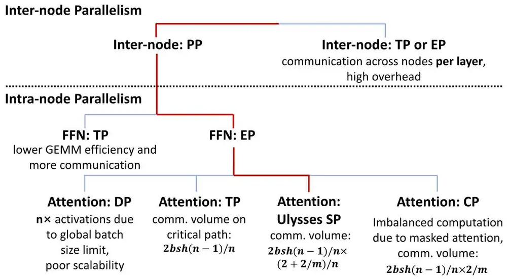
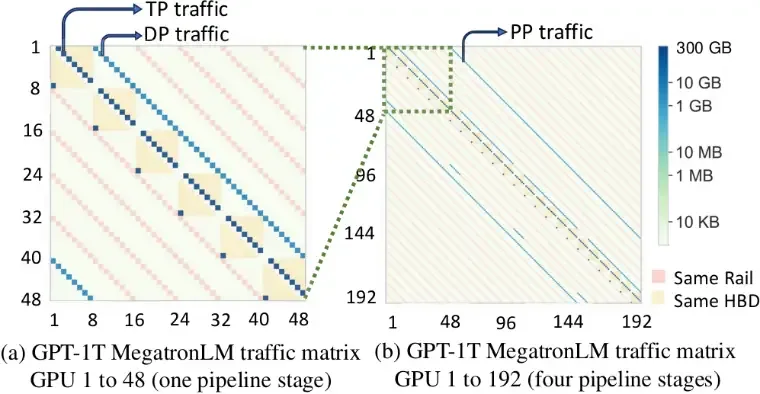

Splitting the model: five parallelisms and the traffic they make切分模型：五種平行化與它們產生的流量
Learn why a model must be split across GPUs, the operations GPUs use to exchange data (collectives), the five ways to split a training job, and how many bytes each way puts on which link.了解模型為何必須切到多顆 GPU 上、GPU 交換資料所用的操作（集體操作）、切分訓練工作的五種方式，以及每種方式把多少位元組放到哪一種鏈路上。
This chapter builds on Chapters 1, 2. These earlier terms appear most often below; each chip links to its definition.
New terms in this chapter (30)本章新名詞（30）
Each term is defined in the text where it first appears; the link jumps there. Terms from earlier chapters are listed under "Before you start".
每個名詞都在它第一次出現的段落中定義，點連結可跳過去。前面各章的名詞列在「開始之前」。
- Parallelism dimension, degree平行化維度與程度 A way to split a training job over GPUs (DP, TP, PP, CP, EP). Its degree is how many GPUs share one split. 把訓練工作分散到 GPU 的方式（DP、TP、PP、CP、EP）。程度是共同分擔一份切分的 GPU 數。
- Mixed precision (BF16, FP32, FP8)混合精度（BF16、FP32、FP8） Doing the arithmetic in 16-bit numbers (BF16, 2 bytes) while keeping 32-bit copies (FP32, 4 bytes) for the optimizer. 以 16 位元數字（BF16，2 位元組）做運算，同時為優化器保留 32 位元副本（FP32，4 位元組）。
- Optimizer state最佳化器狀態 The extra numbers the optimizer keeps per parameter: for Adam, an FP32 master weight and two moments, 12 bytes. 優化器為每個參數保留的額外數字：Adam 為一個 FP32 主權重與兩個動量，共 12 位元組。
- Activations激活值（activation） The intermediate results of each layer, kept from the forward pass because the backward pass needs them. 每一層的中間結果；反向傳播需要它們，所以前向傳播時必須保存。
- Micro-batch微批次（micro-batch） A slice of the batch that one GPU group processes at a time; a step runs many of them. 一個 GPU 群組一次處理的批次切片；一個步驟會跑很多個。
- Tensor parallelism (TP)張量平行（TP） Each weight matrix of a layer is split across GPUs; the partial results are combined by collectives inside every layer. 把每層的權重矩陣切到多顆 GPU；每一層內都要用集體操作合併部分結果。
- Pipeline parallelism (PP), stage管線平行（PP）、階段 The layers are divided into consecutive stages on different GPUs, and activations are passed from stage to stage. 把各層分成連續的階段放在不同 GPU 上，活化值在階段之間傳遞。
- Activation checkpointing激活值檢查點（activation checkpointing） Keeping only some activations and recomputing the rest in the backward pass; saves memory for about one extra forward pass. 只保存部分激活值，其餘在反向傳播時重算；以約一次額外的前向傳播換取記憶體。
- Send/receive (point-to-point)Send/receive（點對點） A message from one rank to one other rank, as between pipeline stages. 從一個 rank 送到另一個 rank 的訊息，例如管線階段之間。
- Collective集體操作（collective） A communication operation in which every rank of a group takes part, such as an all-reduce. 群組中每個 rank 都參與的通訊操作，例如 all-reduce。
- All-reduceAll-reduce A collective in which every rank ends with the sum of all ranks' buffers. It averages DP gradients. 每個 rank 最後都得到所有 rank 緩衝區總和的集體操作；用於平均 DP 梯度。
- Reduce-scatterReduce-scatter A collective in which every rank ends with the sum of one slice (1/N) of all buffers. 每個 rank 最後得到所有緩衝區某一切片（1/N）總和的集體操作。
- All-gatherAll-gather A collective in which each rank starts with one slice and every rank ends with all slices. 每個 rank 起初各有一個切片、最後都擁有全部切片的集體操作。
- All-to-allAll-to-all A collective in which every rank sends a different block to every other rank. 每個 rank 都送不同資料區塊給其他每個 rank 的集體操作。
- Data parallelism (DP)資料平行（DP） Every GPU group holds the same model and reads a different part of the batch; their gradients are summed every step. 每個 GPU 群組持有相同模型、讀取批次的不同部分；每一步都要把梯度加總。
- Model replica模型副本 One complete copy of the model, spread over a TP × PP group of GPUs; DP joins the replicas. 一份完整的模型，分布在一個 TP × PP 的 GPU 群組上；DP 連接各個副本。
- ZeRO, FSDPZeRO、FSDP Data parallelism that divides (shards) optimizer state, gradients and weights among the DP group; FSDP is PyTorch's ZeRO-3. 把最佳化器狀態、梯度與權重分散（分片）到 DP 群組的資料平行；FSDP 是 PyTorch 的 ZeRO-3。
- Shard分片（shard） One GPU's slice of a tensor or of the model state when it is divided among GPUs. 張量或模型狀態被分散到多顆 GPU 時，一顆 GPU 持有的那一片。
- Critical path關鍵路徑 The chain of steps that must finish one after another; anything on it adds directly to the step time. 必須依序完成的一串工作；位於其上的任何東西都直接加到步驟時間。
- Sequence parallelism (SP)序列平行（SP） Splitting some per-token work of a layer along the sequence across the TP group; turns each all-reduce into an all-gather plus a reduce-scatter. 把層內部分逐詞元的工作沿序列分給 TP 群組；把 all-reduce 變成 all-gather 加 reduce-scatter。
- Pipeline bubble管線氣泡 Idle time at the start and end of a pipelined step, while stages wait for the first or last micro-batch. 管線化步驟開頭與結尾的閒置時間，各階段等待第一個或最後一個微批次。
- 1F1B, interleaved schedule1F1B、交錯排程 Pipeline schedules: 1F1B alternates one forward and one backward micro-batch; interleaving gives each GPU several chunks of layers. 管線排程：1F1B 交替一個前向與一個反向微批次；交錯排程讓每顆 GPU 持有多段層。
- Context parallelism (CP)上下文平行（CP） One long sequence is split across GPUs; attention gathers the keys and values of the whole sequence. 把一條長序列切到多顆 GPU；注意力運算要收集整條序列的 key 與 value。
- Expert parallelism (EP)專家平行（EP） Different experts sit on different GPUs, so tokens are sent to their experts and back with all-to-alls. 不同專家放在不同 GPU 上，詞元以 all-to-all 送到專家再送回。
- Mixture of experts (MoE), expert混合專家（MoE）、專家 A model whose feed-forward layers are many small networks (experts); each token uses only a few of them. 前饋層由許多小網路（專家）組成的模型；每個詞元只使用其中少數幾個。
- Router, top-k路由器（router）、top-k The small layer that scores the experts for each token and keeps the best k of them. 為每個詞元替專家打分、保留最好的 k 個的小型層。
- Dispatch, combine分派（dispatch）、合併（combine） The two all-to-alls of an MoE layer: tokens to their experts, then expert outputs back. MoE 層的兩次 all-to-all：把詞元送到專家，再把專家輸出送回。
- Active parameters啟用參數 The parameters one token actually uses; compute follows them, memory follows the total. 一個詞元實際用到的參數；運算量看它，記憶體看總數。
- Local rank本地 rank A GPU's position inside its server, 0 to 7. GPUs with the same local rank in different servers often talk to each other. GPU 在其伺服器內的位置，0 到 7。不同伺服器中本地 rank 相同的 GPU 常互相通訊。
- Traffic matrix流量矩陣 A table of how many bytes each GPU sends to each other GPU in one step. 記錄一個步驟中每顆 GPU 送給其他每顆 GPU 多少位元組的表格。
3.1Memory needed to train a model訓練模型的記憶體需求
Chapter 1 explained why a large language model needs thousands of GPUs to finish training in a reasonable time. Besides speed, memory capacity is an important reason why a model must be spread across many GPUs. During training a GPU stores not only the model's parameters but also the gradients, the values the optimizer keeps and the intermediate results that the backward pass needs. This chapter first estimates the memory these data require, then introduces the basic operations GPUs use to exchange data and the five common ways of splitting a training job, each called a parallelism. Each way creates a different communication demand, which lands on a different kind of network link from Chapter 2.
第 1 章說明了大型語言模型為什麼需要數千顆 GPU 才能在合理時間內完成訓練。除了運算速度，記憶體容量也是模型必須分散到多顆 GPU 的重要原因。訓練時，GPU 除了儲存模型參數，還需要保留梯度、優化器狀態及反向傳播所需的中間結果。本章先估算這些資料的記憶體需求，再介紹 GPU 之間的基本通訊操作，以及五種常見的平行化方式。每種方式都會產生不同的通訊需求，對應到第 2 章介紹的不同網路鏈路。
All the models in this book use the Transformer architecture, a stack of many layers with a similar structure. Each layer consists mainly of two parts, Attention and an MLP. Attention lets each token update its representation from the information in the other tokens of the sequence, while the MLP processes each token on its own, and most of this computation is matrix multiplication. The model represents each token as a vector of length , and is called the hidden dimension, which is 16,384 for Llama 3 405B.
本書討論的模型都採用 Transformer 架構，由多個結構相似的層堆疊而成。每層主要包含 Attention 和 MLP 兩個部分。Attention 讓每個 token 根據序列中其他 token 的資訊更新表示，而 MLP 則獨立處理每個 token。這些計算大多由矩陣乘法組成。模型使用長度為 的向量表示每個 token，其中 稱為隱藏維度（hidden dimension）。例如，Llama 3 405B 的隱藏維度為 16,384。
Memory for the model state模型狀態的記憶體需求
Training must store far more than the model weights. In the common recipe of BF16 mixed-precision training, trained with Adam, the forward and backward passes compute with 16-bit floating-point numbers, but the optimizer still keeps 32-bit master weights so that tiny parameter updates are not rounded away for lack of precision.
訓練時需要儲存的資料遠多於模型權重本身。以常見的 BF16 混合精度訓練搭配 Adam 優化器為例，前向與反向傳播使用 16-bit 浮點數進行計算，但優化器仍保留 32-bit 的主權重，以避免微小的參數更新因精度不足而被捨去。
In this setup each parameter needs 2 bytes for its BF16 weight, 2 bytes for its BF16 gradient and three FP32 values, namely the master weight (4 bytes), Adam's first moment (4 bytes) and its second moment (4 bytes). The last three together are called the optimizer state, so each parameter needs in total
在這種配置下，每個參數需要 2 bytes 的 BF16 權重、2 bytes 的 BF16 梯度，以及三組 FP32 資料，分別是主權重（4 bytes）、Adam 的一階動量 （4 bytes）和二階動量 （4 bytes）。後三者合稱優化器狀態（optimizer states），因此每個參數總共需要：
The optimizer state accounts for 12 of these bytes, the largest part of the model state and the first data worth spreading across GPUs (Section 3.3).
其中優化器狀態占了 12 bytes，是模型狀態中最大的一部分，也是最值得優先分散到多顆 GPU 的資料（第 3.3 節）。
This memory grows in direct proportion to the number of parameters. With 80 GB of HBM on one H100 and 16 bytes per parameter, models of different sizes need the following:
這項記憶體需求隨參數量直接增加。假設一顆 H100 GPU 配備 80 GB HBM，且每個參數需要 16 bytes，則不同規模模型的記憶體需求如下：
| Model size模型規模 | Model-state memory模型狀態記憶體 | Minimum H100s最少 H100 數量 |
|---|---|---|
| 7B7B | 112 GB112 GB | 22 |
| 70B70B | 1.12 TB1.12 TB | 1414 |
| 405B405B | 6.48 TB6.48 TB | 8181 |
The model state of Llama 3 405B alone takes about 6.48 TB, the entire memory of 81 H100s, and even a 7B model already exceeds the capacity of one H100. These numbers do not yet include the activations and other temporary data, so real training needs more memory. Other optimizers or lower-precision optimizer state can reduce the requirement, but large models still have to spread their data across many GPUs.
Llama 3 405B 光是模型狀態就需要約 6.48 TB，相當於 81 顆 H100 的全部記憶體容量。即使是 7B 模型，也已經超過單顆 H100 的容量。這些數字尚未包含激活值與其他暫存資料，因此實際訓練需要更多記憶體。使用其他優化器或較低精度的優化器狀態可以減少需求，但大型模型仍然需要將資料分散到多顆 GPU。
For a mixture-of-experts (MoE) model, the memory requirement depends on the total number of parameters. Each token activates only a few experts, but the parameters of every expert must be stored in the system, so the size of the model cannot be estimated from the parameters active at any one time (Section 3.8).
對混合專家模型（Mixture of Experts, MoE）而言，記憶體需求取決於總參數量。雖然每個 token 只會啟用少數專家，但所有專家的參數都必須儲存在系統中，因此不能只根據每次啟用的參數量估算模型大小（第 3.8 節）。
Memory for activations激活值的記憶體需求
Besides the model state, training must also store the activations produced by the forward pass. These intermediate results are used in the backward pass to compute the gradients, so they must be kept until the corresponding backward computation has finished, and their memory grows with the sequence length, the batch size and the model's dimensions.
除了模型狀態，訓練還必須儲存前向傳播產生的激活值（activations）。這些中間結果會在反向傳播時用來計算梯度，因此需要保留到對應的反向運算完成。激活值的記憶體需求會隨序列長度、批次大小及模型維度增加。
To limit the memory of a single pass, training usually splits a large batch into several micro-batches and runs the forward and backward passes on them one after another. The gradients of the micro-batches are accumulated, and the parameters are updated once after all of them have been processed, which keeps the training batch size the same while reducing the activations that must be kept at any one time.
為了控制單次運算的記憶體需求，訓練通常將一個較大的 batch 拆成數個 micro-batches，依序執行前向與反向傳播。各個 micro-batch 的梯度會累積起來，等全部處理完畢後，再進行一次參數更新。如此便能在維持相同訓練 batch 大小的同時，減少單次需要保留的激活值。
The rest of this chapter describes the size of the work with one set of symbols. A sequence has tokens and a micro-batch holds sequences, so each micro-batch carries tokens. Each copy of the model processes micro-batches before every parameter update, and copies run side by side under data parallelism (Section 3.3), so one optimizer step processes sequences, the global batch. The degrees of the other splits are for tensor parallelism and for the stages of pipeline parallelism, and the model has layers of hidden dimension . Unless a number is marked per micro-batch, the byte counts of this chapter are per GPU per optimizer step, which is the unit in which Section 3.7 adds them up.
本章其餘部分用同一組符號描述工作量。一條序列有 個 token，一個 micro-batch 包含 條序列，因此每個 micro-batch 有 個 token。每份模型副本在每次參數更新前處理 個 micro-batch，資料平行（第 3.3 節）讓 份副本同時運作，所以一次參數更新處理 條序列，也就是全域 batch。其他切分方式的度數記為：張量平行 、管線平行的階段數 ；模型共有 層，隱藏維度為 。除非特別標明是每個 micro-batch，本章的位元組數都以每顆 GPU、每次參數更新計算，第 3.7 節也以這個單位把它們加總。
| Symbol符號 | Meaning意義 | Llama 3 405B, 8K phaseLlama 3 405B，8K 階段 |
|---|---|---|
| tokens per sequence每條序列的 token 數 | 8,1928,192 | |
| sequences per micro-batch每個 micro-batch 的序列數 | 11 | |
| micro-batches per optimizer step, per model copy每份模型副本每次參數更新的 micro-batch 數 | 1616 | |
| data-parallel degree (number of model copies)資料平行度數（模型副本數） | 128128 | |
| , 、 | degree of TP, number of PP stagesTP 度數、PP 階段數 | 8, 168、16 |
| , 、 | layers, hidden dimension層數、隱藏維度 | 126, 16,384126、16,384 |
The values in the last column are those of Llama 3's 16,384-GPU run with 8K-token sequences (Llama 3 Table 4, second row), the layout that Section 3.7 works through in full.
最後一欄是 Llama 3 以 8K token 序列、16,384 顆 GPU 訓練時的數值（Llama 3 Table 4 第二列），第 3.7 節會完整推算這個配置。
A Transformer layer produces many kinds of intermediate results, including the projections of Attention, the hidden representations of the MLP and the data needed by operations such as normalization. According to Megatron's study of activation recomputation, for a conventional Transformer layer with sequence length , micro-batch size and hidden dimension , using 16-bit floating-point numbers, the activation memory is approximately
一個 Transformer 層會產生多種中間結果，包括 Attention 的投影、MLP 的隱藏表示，以及正規化等運算所需的資料。根據 Megatron 的激活值重算研究，對序列長度為 、micro-batch 大小為 、隱藏維度為 的傳統 Transformer 層，使用 16-bit 浮點數時，激活值記憶體可以近似為：
The full formula also has a term for the intermediate matrices of Attention, where is the number of attention heads. Modern fused attention kernels avoid storing the full attention matrix, so this term is left out here. The coefficient 34 comes from Megatron's analysis of the conventional Transformer, and the actual value changes with the model's structure and with how the kernels are implemented.
完整公式還包含 Attention 中間矩陣的 項，其中 是 Attention head 數量。現代融合式 Attention kernel 可以避免儲存完整的 Attention 矩陣，因此這裡先省略該項。係數 34 來自 Megatron 對傳統 Transformer 的分析，實際數值會隨模型結構與 kernel 實作而改變。
Using the dimensions of Llama 3 405B, with sequence length , one sequence per micro-batch () and hidden dimension , each layer needs about
以 Llama 3 405B 的維度估算，假設序列長度 ，每個 micro-batch 包含一條序列（），隱藏維度 ，則每層約需要：
Llama 3 405B has 126 layers, so keeping the activations of every layer would take about 575 GB by this formula, more than the memory of seven H100s. This shows why activations can still take a large share of memory even after the model's parameters have been spread across many GPUs.
Llama 3 405B 共有 126 層，若完整保留所有層的激活值，依此公式估算約需 575 GB，相當於超過七顆 H100 的記憶體。這也說明了為什麼即使模型參數已經分散到多顆 GPU，激活值仍然可能占用大量記憶體。
There are two main ways to reduce the memory of activations. The first is model parallelism, which spreads different layers or intermediate tensors across several GPUs so that each GPU keeps only part of them (Section 3.7).
降低激活值記憶體需求有兩種主要方法。第一種是透過模型平行化，將不同層或中間張量分散到多顆 GPU，使每顆 GPU 只需保存其中一部分（第 3.7 節）。
The second is activation checkpointing, also called activation recomputation. During the forward pass it keeps only some of the intermediate results, such as the input of each layer, and recomputes the other activations when the backward pass needs them. If each layer keeps only its input, the checkpointed data take about bytes, far less than the above. The price is that part of the forward computation must be run again during the backward pass, and recomputing every layer in full costs about one extra forward pass.
第二種是激活值檢查點（activation checkpointing），也稱為 activation recomputation。其做法是在前向傳播時只保留部分中間結果，例如每層的輸入，等反向傳播需要其他激活值時再重新計算。若每層只保存輸入，檢查點資料量約為 bytes，相較於前面的 大幅降低。代價是反向傳播期間必須重新執行部分前向運算，若完整重算每層，額外計算量約相當於再進行一次前向傳播。
Distributed training must therefore account for the memory of both the model state and the activations. The first is set mainly by the number of parameters, while the second grows with the number of tokens and the model's dimensions. The different ways of splitting a job reduce the memory burden on each GPU by partitioning these data or by rearranging the computation, but each brings its own communication cost.
因此，分散式訓練必須同時考慮模型狀態與激活值的記憶體需求。前者主要由參數量決定，後者則隨 token 數量及模型維度增加。不同的平行化方式透過切分這些資料或重新安排計算，降低單顆 GPU 的記憶體負擔，但也會帶來不同的通訊成本。
3.2How GPUs exchange data: collectivesGPU 如何交換資料：集體操作
Once a model or its training data is spread across several GPUs, the GPUs need to exchange data. The simplest way is point-to-point communication, in which one GPU sends and another receives. Distributed training, however, usually needs a whole group of GPUs to exchange data together, for example to sum the gradients that each one computed or to gather model parameters spread over different GPUs. Communication in which a group of GPUs takes part together is called a collective operation.
當模型或訓練資料分散到多顆 GPU 後，GPU 之間就需要交換資料。最簡單的方式是點對點傳輸（point-to-point communication），由一顆 GPU 發送（send），另一顆 GPU 接收（receive）。然而，分散式訓練通常需要一整組 GPU 共同交換資料，例如將各自計算的梯度加總，或收集分散在不同 GPU 上的模型參數。這類由多顆 GPU 共同參與的通訊稱為集體操作（collective communication）。
Distributed training mainly uses four collectives. The table below assumes that GPUs take part and that is the size of the complete data being exchanged, and the traffic it lists is the number of bytes each GPU must send.
分散式訓練主要使用四種集體操作。下表假設有 顆 GPU 參與， 表示要交換的完整資料大小。表中的通訊量是每顆 GPU 需要送出的位元組數。
| Collective集體操作 | Data each GPU starts with每顆 GPU 原有資料 | Result執行結果 | Bytes each GPU sends每顆 GPU 發送量 |
|---|---|---|---|
| All-reduceAll-reduce | bytes bytes | the sum of all GPUs' data, so every GPU gets the complete bytes所有 GPU 資料的總和，每顆得到完整的 bytes | about 約 |
| Reduce-scatterReduce-scatter | bytes bytes | the data are summed and the result split into parts, so each GPU gets a different bytes先加總，再將結果分成 份，每顆取得不同的 bytes | about 約 |
| All-gatherAll-gather | bytes bytes | the data of all GPUs are collected, so every GPU gets the complete bytes收集所有 GPU 的資料，每顆得到完整的 bytes | about 約 |
| All-to-allAll-to-all | bytes in parts bytes，分成 份 | each GPU sends different data to each of the others and ends with the bytes meant for it每顆 GPU 將不同的資料分別送給其他 GPU，最後收到屬於自己的 bytes | about 約 |
The pictograms below show what each collective does to the buffers of four GPUs. A letter is a position in the buffer, the color says whose data a chunk holds, and Σ marks a chunk summed over all four GPUs.
下方的圖示顯示每種集體操作對四顆 GPU 的緩衝區做了什麼。字母是緩衝區中的位置，顏色表示該塊是誰的資料，Σ 表示對四顆 GPU 加總後的塊。
Of these, an all-reduce can be split into one reduce-scatter followed by one all-gather. First the GPUs sum their data and each takes a different part of the result, and then they exchange these parts so that every GPU ends with the complete sum. This is also how the ring all-reduce works.
其中，All-reduce 可以拆成一次 Reduce-scatter 加上一次 All-gather。首先，各 GPU 將資料加總，並分別取得結果的不同部分；接著交換這些部分，使每顆 GPU 都得到完整的加總結果。這也是環形 All-reduce的基本運作方式。
Another important property of collectives is that the traffic of each GPU usually does not shrink noticeably as more GPUs take part. For an all-reduce with the ring algorithm, for example, each GPU sends
集體操作的另一個重要特性是，每顆 GPU 的通訊量通常不會隨參與 GPU 數量增加而明顯減少。以 All-reduce 為例，使用環形演算法時，每顆 GPU 送出的資料量為：
When is large this approaches , so each GPU still exchanges roughly the same amount of data however many GPUs are added. The all-to-all follows a different pattern, because each GPU sends different data to every other GPU and the traffic becomes many-to-many. Chapter 4 describes the algorithms that carry out these operations and the time they take.
當 很大時，這個值趨近 。因此，即使增加更多 GPU，每顆 GPU 仍須交換大致相同的資料量。All-to-all 的通訊模式則有所不同。每顆 GPU 都要向其他 GPU 傳送不同的資料，形成多對多的通訊需求。第 4 章將進一步介紹這些操作的執行演算法與通訊時間。
3.3Data parallelism and ZeRO資料平行與 ZeRO
Data parallelism (DP) is the most direct way to distribute training. Each GPU keeps a complete copy of the model, a replica, but processes different data of the training batch. After the GPUs finish their forward and backward passes independently, they hold different gradients, so to make every replica apply the same parameter update the GPUs must first sum and average the gradients with an all-reduce and only then run the optimizer.
資料平行（Data Parallelism, DP）是最直接的分散式訓練方式。每顆 GPU 保留一份完整的模型副本（replica），但處理訓練批次中不同的資料。各 GPU 獨立完成前向與反向傳播後，會得到不同的梯度。為了確保所有模型副本使用相同的參數更新，GPU 必須先透過 All-reduce 將梯度加總並取平均，再執行優化器更新。
If the model has parameters and the gradients are stored in BF16, the gradient on each GPU is bytes. With a DP group of GPUs and a ring all-reduce, each GPU sends per step
假設模型有 個參數，梯度以 BF16 儲存，則每顆 GPU 的梯度大小為 bytes。若 DP 群組包含 顆 GPU，使用環形 All-reduce 時，每顆 GPU 每步需要發送：
The BF16 gradients of a 70B model, for example, take about 140 GB, and a full all-reduce makes each GPU send about 280 GB, which shows why DP produces so much network traffic. In practice the gradients that are already computed can start their all-reduce during the backward pass, overlapping with the gradient computation of other layers and reducing the time the GPUs spend waiting for communication.
例如，一個 70B 模型的 BF16 梯度大小約為 140 GB，完整 All-reduce 的每 GPU 發送量約為 280 GB。這也說明了為什麼 DP 會產生大量網路流量。實際訓練可以在反向傳播時，讓已完成計算的梯度先開始 All-reduce，與其他層的梯度計算重疊，減少 GPU 等待通訊的時間。
The gradient size and the actual traffic need to be kept apart here. For a model with parameters the BF16 gradient is bytes, but in one ring all-reduce each GPU sends about bytes. Some papers report the former, such as HPN's 5.5 GB gradient message, while others count the bytes actually carried by the network.
這裡需要區分梯度大小與實際通訊量。對具有 個參數的模型，BF16 梯度大小是 bytes，但一次環形 All-reduce 中，每顆 GPU 送出的資料約為 bytes。有些論文報告的是前者，例如 HPN 的 5.5 GB 梯度訊息；另一些則計算實際在網路上傳輸的位元組數。
ZeRO: spreading the model stateZeRO：分散模型狀態
Plain DP also wastes memory. Every GPU keeps the complete model weights, gradients and optimizer state and applies the same parameter update once the averaged gradient is available, so with the mixed-precision Adam training of Section 3.1, which needs 16 bytes per parameter, every DP replica stores the same data again.
一般 DP 還有記憶體浪費的問題。每顆 GPU 都保存完整的模型權重、梯度和優化器狀態，並在取得平均梯度後執行相同的參數更新。以第 3.1 節的混合精度 Adam 訓練為例，每個參數需要 16 bytes，因此所有 DP 副本都要重複儲存這些資料。
ZeRO (Zero Redundancy Optimizer) removes these duplicate copies step by step by spreading the model state across the GPUs of the DP group. ZeRO has three stages, and each stage shards one more kind of data:
ZeRO（Zero Redundancy Optimizer）透過將模型狀態分散到 DP 群組中的不同 GPU，逐步消除這些重複副本。ZeRO 分成三個階段，每個階段進一步切分一種資料（分片）：
- ZeRO-1 shards the optimizer state. Each GPU keeps only of the FP32 master weights and Adam moments and updates the corresponding parameters, while the BF16 weights and gradients are still fully replicated.
- ZeRO-2 also shards the gradients. A GPU obtains the gradients it is responsible for with a reduce-scatter, updates the corresponding parameters and finally synchronizes the updated weights with an all-gather.
- ZeRO-3 shards the model weights as well. Each GPU normally keeps only of the model state and gathers the complete weights of a layer with an all-gather only when that layer runs, after which they can be sharded again. PyTorch's Fully Sharded Data Parallel (FSDP) works this way.
- ZeRO-1 將優化器狀態分片。每顆 GPU 只保留 的 FP32 主權重與 Adam 動量，並負責更新對應的參數。BF16 權重與梯度仍保留完整副本。
- ZeRO-2 進一步將梯度分片。GPU 透過 Reduce-scatter 取得自己負責的梯度，再更新對應的參數，最後利用 All-gather 同步更新後的權重。
- ZeRO-3 連模型權重也一起分片。每顆 GPU 平時只保存 的模型狀態，執行某層時才透過 All-gather 收集該層的完整權重，計算完成後即可重新分片。PyTorch 的 Fully Sharded Data Parallel（FSDP）採用這類方式。
With a DP group of GPUs, the memory each stage keeps resident per parameter is:
假設 DP 群組有 顆 GPU，各階段每個參數所需的常駐記憶體如下：
| Method方法 | Memory per parameter每參數記憶體 | |
|---|---|---|
| Plain DP一般 DP | bytes bytes | 16 bytes16 bytes |
| ZeRO-1ZeRO-1 | 7 bytes7 bytes | |
| ZeRO-2ZeRO-2 | 5.5 bytes5.5 bytes | |
| ZeRO-3 / FSDPZeRO-3 / FSDP | 4 bytes4 bytes |
As Figure 3.3 shows, each ZeRO stage shards one more part of the model state, and at ZeRO-3 leaves each GPU with only a quarter of the model state resident. Running a layer, however, still needs extra temporary space for the weights collected by the all-gather.
如圖 3.3 所示，ZeRO 每增加一個階段，就多分片一部分模型狀態。當 時，ZeRO-3 讓每顆 GPU 只需常駐保存四分之一的模型狀態。不過，執行某層時仍需要額外的暫存空間，放置 All-gather 收集到的權重。
What the two collectives carry兩次集體操作搬的是什麼
The two collectives carry different data in the two methods. In plain DP, the all-gather that completes the all-reduce spreads the averaged gradients, and every GPU then repeats the whole Adam update with its full optimizer state. In ZeRO-2, each GPU uses the reduce-scattered average to update only the shard it is responsible for, and the all-gather spreads the updated weights instead, which yields the same model because Adam still sees the averaged gradient. ZeRO-1 follows the same sequence but keeps its full local gradient buffer, while ZeRO-3 moves its all-gather of the weights to just before each layer runs (Panel 3.1 steps through all four methods).
兩種方法中，這兩次集體操作搬運的資料並不相同。一般 DP 中，完成 All-reduce 的 All-gather 散播的是平均梯度，之後每顆 GPU 再用完整的優化器狀態重複整個 Adam 更新。ZeRO-2 則讓每顆 GPU 用 Reduce-scatter 得到的平均梯度只更新自己負責的那一片，All-gather 散播的改為更新後的權重，由於 Adam 用的仍是平均梯度，得到的模型完全相同。ZeRO-1 的順序相同，但保留完整的本地梯度緩衝區，ZeRO-3 則把權重的 All-gather 移到每一層執行之前（面板 3.1 逐步呈現這四種方法）。
Animation 3.1 uses four GPUs to show how ZeRO-3 first gathers the weights of a layer with an all-gather, runs the computation and then distributes the gradients with a reduce-scatter.
動畫 3.1 以四顆 GPU 為例，展示 ZeRO-3 如何先透過 All-gather 收集一層的權重，執行計算後再以 Reduce-scatter 分配梯度。
Gradient accumulation梯度累加
One training step usually contains several micro-batches. The GPUs accumulate the gradients computed for each micro-batch and synchronize the gradients and update the model only after all of them are done, so plain DP needs only one gradient all-reduce per step, and its traffic is set mainly by the size of the model and does not depend on the number of micro-batches. How often ZeRO-3 gathers the weights also depends on whether the full weights are kept from one micro-batch to the next.
一次訓練步驟通常包含多個 micro-batch。GPU 會先累積各個 micro-batch 計算出的梯度，等全部完成後才同步梯度並更新模型。因此，一般 DP 每步只需要執行一次梯度 All-reduce，其通訊量主要由模型大小決定，與 micro-batch 數量無關。ZeRO-3 的權重收集次數則還取決於是否在不同 micro-batch 之間保留完整權重。
As the batch size grows, the same cost of gradient synchronization is spread over more tokens, which lowers the average DP traffic per token. This is why optimizers that support large-batch training, such as LAMB, also help reduce communication cost besides improving training efficiency (MegaScale §3.1). Llama 3 further accumulates and reduce-scatters the gradients in FP32 for numerical stability, which also raises the gradient traffic from 2 to 4 bytes per parameter.
當 batch size 增加時，同樣的梯度同步成本可以分攤到更多 token，使每個 token 的平均 DP 通訊成本下降。這也是 LAMB 等支援大型 batch 訓練的優化器除了改善訓練效率，也有助於降低通訊成本的原因（MegaScale §3.1）。Llama 3 進一步使用 FP32 進行梯度累積與 Reduce-scatter，以提高數值穩定性，但也讓梯度通訊量從每參數 2 bytes 增加至 4 bytes。
The analysis of this section assumes one gradient synchronization per optimizer step. A real step contains many micro-batches and, with pipeline parallelism, a pipeline schedule, and both change how often ZeRO must communicate, so Section 3.5 returns to ZeRO once pipelines have been introduced.
本節的分析假設每次參數更新只同步一次梯度。實際的一步包含許多 micro-batch，搭配管線平行時還有管線排程，兩者都會改變 ZeRO 的通訊次數，因此第 3.5 節在介紹管線之後會再回到 ZeRO。
3.4Tensor parallelism: communication inside every layer張量平行：每層內部的通訊
Tensor parallelism (TP) spreads the weight matrices of every layer of the model across several GPUs, so that each GPU stores and computes only part of them and the GPUs then combine their results through communication. This lowers the memory each GPU needs and also lets several GPUs carry out together a matrix computation that one GPU would otherwise do alone.
張量平行（Tensor Parallelism, TP）將模型每一層的權重矩陣分散到多顆 GPU，讓每顆 GPU 只需儲存並計算其中一部分，再透過通訊合併結果。這樣既能降低單顆 GPU 的記憶體需求，也能讓多顆 GPU 同時執行原本由一顆 GPU 負責的矩陣運算。
The communication of TP happens inside every layer, and both the forward and the backward passes need to exchange data. These exchanges carry mainly activations, and the computation that follows usually has to wait until the exchange is complete, so TP communication sits on the critical path of training and is especially sensitive to communication latency and bandwidth. To lower this cost, real systems usually place a TP group inside one server, where it communicates at high speed over NVLink and NVSwitch, and a common TP degree is 8, matching a server with eight GPUs.
TP 的通訊發生在每一層內部，前向與反向傳播都需要交換資料。這些交換主要傳輸激活值，且後續計算往往必須等待交換完成才能繼續。因此，TP 通訊位於訓練的關鍵路徑（critical path）上，對通訊延遲與頻寬特別敏感。為了降低這項成本，實際系統通常將 TP 群組安排在同一台伺服器內，利用 NVLink 和 NVSwitch 進行高速通訊。常見的 TP 度數為 8，對應一台具有八顆 GPU 的伺服器。
Megatron's matrix splitMegatron 的矩陣切分
Megatron-LM combines two ways of splitting a matrix to reduce the communication each layer needs. Take the MLP of a Transformer as an example, whose computation consists of two matrix multiplications:
Megatron-LM 透過搭配兩種矩陣切分方式，減少每層需要執行的通訊操作。以 Transformer 的 MLP 為例，其計算包含兩次矩陣乘法：
Here is the input activation of size , where is the hidden dimension and is the number of tokens in the micro-batch. The first weight matrix expands the hidden dimension from to , and the second matrix shrinks it back to .
其中， 是大小為 的輸入激活值， 是隱藏維度， 是 micro-batch 中的 token 數量。第一個權重矩陣 將隱藏維度從 擴展至 ，第二個矩陣 再將其縮回 。
With a TP group of GPUs, Megatron splits into parts along its output dimension, so each GPU holds one and computes on its own
假設 TP 群組包含 顆 GPU，Megatron 將 沿輸出維度分成 份，每顆 GPU 持有一個 ，並獨立計算：
Because GeLU acts on each element separately, each GPU can process its own part directly without exchanging intermediate results.
由於 GeLU 是逐元素運算，各 GPU 可以直接處理自己負責的部分，無須交換中間結果。
Megatron then splits into the matching parts along its input dimension. Each GPU computes a partial output from its own and , and an all-reduce finally adds these results together:
接著，Megatron 將 沿輸入維度分成對應的 份。每顆 GPU 使用自己的 與 計算部分輸出，最後透過 All-reduce 將這些結果加總：
In this way the two matrix multiplications of the MLP need only one all-reduce at the end (Figure 3.4). Attention follows the same approach, assigning the attention heads to different GPUs that compute independently and then adding up the partial results of the output projection. The backward pass needs the corresponding sum across GPUs when it computes the gradient of the input.
這樣一來，MLP 的兩次矩陣乘法只需要在最後執行一次 All-reduce（圖 3.4）。Attention 也採用類似方式，先將 Attention heads 分配給不同 GPU 獨立計算，再將輸出投影的部分結果加總。反向傳播則需要在計算輸入梯度時進行對應的跨 GPU 加總。
Standard Megatron TP therefore needs four all-reduces per Transformer layer and per micro-batch, two in the forward pass and two in the backward pass.
因此，在標準 Megatron TP 中，每個 Transformer 層、每個 micro-batch 需要四次 All-reduce，前向兩次、反向兩次。
Figures 3.5 and 3.6 show how Llama 3 405B applies this split with TP = 8. In attention, , and are split by heads, that is along their output dimension, so each GPU computes 16 query heads with one KV head entirely on its own, and is split along its input dimension, which leaves each GPU with a partial sum of the output. In the MLP, the gate and up projections of SwiGLU are split along the FFN dimension into slices of 6,656, and the down projection along its input dimension. Each block therefore has two points of communication. At its output, marked g, the forward pass all-reduces the partial sums, and at its input, marked f, the backward pass all-reduces the gradient of , because every GPU used the full and the gradients that the slices contribute to it must be added. The column and row splits stay the same in both passes, and only the point that carries the all-reduce moves from g in the forward pass to f in the backward pass.
圖 3.5 與 圖 3.6 顯示 Llama 3 405B 在 TP = 8 下如何套用這種切分。在注意力中，、 與 依注意力頭切分，也就是沿輸出維度切分，因此每顆 GPU 可以完全獨立地計算 16 個 query 頭與 1 個 KV 頭，而 沿輸入維度切分，使每顆 GPU 得到輸出的部分和。在 MLP 中，SwiGLU 的 gate 與 up 投影沿 FFN 維度切成每片 6,656，down 投影則沿輸入維度切分。因此每個區塊有兩個通訊點。在區塊輸出端的 g，前向傳播對部分和做 All-reduce；在區塊輸入端的 f，反向傳播對 的梯度做 All-reduce，因為每顆 GPU 都用了完整的 ，各切片對它的梯度必須加總。前向與反向使用同一組行列切分，改變的只是 All-reduce 的位置，前向在 g，反向在 f。
Megatron later added sequence parallelism (SP), which spreads operations such as LayerNorm and Dropout across GPUs along the sequence dimension and so removes duplicated copies of activations. With SP, each all-reduce is carried out instead by a reduce-scatter together with an all-gather. Under the ideal ring model the total bytes transferred stay the same, while the memory of some activations falls to of what it was.
Megatron 後來進一步加入序列平行（Sequence Parallelism, SP），將 LayerNorm、Dropout 等運算沿序列維度分散至不同 GPU，減少重複儲存的激活值。加入 SP 後，原本的 All-reduce 會改由 Reduce-scatter 與 All-gather 配合完成。在理想的環形通訊模型下，總傳輸位元組數維持相同，但部分激活值的記憶體需求可降低至原本的 。
Why TP usually stays inside the server為什麼 TP 通常留在伺服器內？
The communication cost of TP comes mainly from two factors. First, every layer must exchange activations of full size, a single message can reach tens of megabytes, and the traffic of a whole layer can add up to hundreds of megabytes. Second, these operations usually sit between adjacent matrix multiplications, so the GPU must obtain the combined result before it can continue with the next computation. The gradient synchronization of DP, by contrast, can proceed layer by layer during the backward pass and is easier to overlap with the computation of other layers.
TP 的通訊成本主要來自兩個因素。首先，每層都需要交換完整大小的激活值，單次訊息可能達到數十 MB，整層累積的傳輸量可達數百 MB。其次，這些通訊操作通常位於相鄰矩陣乘法之間，GPU 必須取得合併後的結果，才能繼續後面的計算。相較之下，DP 的梯度同步可以隨著反向傳播逐層進行，較容易與其他層的計算重疊。
This makes TP particularly dependent on fast GPU interconnects. An H100 has up to 900 GB/s of NVLink bandwidth counted in both directions, about 450 GB/s in each direction, while a 400 Gb/s NIC offers only 50 GB/s. Placing a TP group inside one eight-GPU server lets its collectives use the high bandwidth of NVSwitch and avoids frequent transfers of activations over the slower network between servers.
這使得 TP 特別依賴高速的 GPU 互連。以 H100 為例，每顆 GPU 的 NVLink 雙向總頻寬最高為 900 GB/s，約相當於每方向 450 GB/s，而一張 400 Gb/s NIC 的頻寬只有 50 GB/s。若將 TP 群組放在同一台八 GPU 伺服器內，便可以利用 NVSwitch 提供的高頻寬進行集體操作，避免頻繁透過較慢的跨機網路傳輸激活值。
Take the dimensions of GPT-3 175B as an example, with hidden dimension , 2,048 tokens per micro-batch, BF16 activations and TP degree . The message of each all-reduce is
以 GPT-3 175B 的模型維度為例，假設隱藏維度 ，每個 micro-batch 包含 2,048 個 token，激活值使用 BF16，且 TP 度數 。每次 All-reduce 的訊息大小為：
With a ring all-reduce each GPU sends bytes per all-reduce, so the four all-reduces of one layer's forward and backward passes send in total
使用環形 All-reduce 時，每顆 GPU 每次需要傳送 bytes。因此，一層前向與反向傳播的四次 All-reduce，合計需要傳送：
To compare communication with computation, assume an effective GPU rate of 400 TFLOP/s. The matrix multiplications of a Transformer layer's forward and backward passes take about FLOPs, ignoring the attention scores, which with the parameters above gives about 7.0 ms of computation per GPU. Without any overlap of communication and computation, the result is:
為了比較通訊與運算時間，假設 GPU 的有效計算速率為 400 TFLOP/s，Transformer 層的前向與反向矩陣乘法合計約需 FLOPs，忽略 Attention 分數計算。代入上述參數，每顆 GPU 的計算時間約為 7.0 ms。若不考慮通訊與計算重疊，結果如下：
| NVLinkNVLink | 400G NIC400G NIC | |
|---|---|---|
| Bytes sent per GPU每顆 GPU 傳輸量 | 352 MB352 MB | 352 MB352 MB |
| Assumed bandwidth可用頻寬假設 | 450 GB/s450 GB/s | 50 GB/s50 GB/s |
| Communication time通訊時間 | 0.78 ms0.78 ms | 7.0 ms7.0 ms |
| Computation time計算時間 | 7.0 ms7.0 ms | 7.0 ms7.0 ms |
| Total time總時間 | 7.8 ms7.8 ms | 14.0 ms14.0 ms |
| Communication share of the total通訊占總時間 | 10%10% | 50%50% |
The example shows that with the same matrix split, TP communication over the NICs between servers can take nearly as long as the computation and leave the GPUs waiting for data much of the time, while NVLink cuts this cost sharply.
這個例子顯示，同樣的矩陣切分方式，若透過跨機 NIC 進行 TP 通訊，通訊時間可能接近計算時間，使 GPU 有大量時間等待資料。使用 NVLink 則能大幅降低這項成本。
The 400G column is a simplified model in which every byte of the collective crosses one NIC. A TP group that spans servers would run its collectives over both NVLink and the NICs, with hierarchical algorithms that keep part of the traffic inside each server, so the real cost depends on the topology and the algorithm (Chapter 4).
400G 這一欄是簡化模型，假設集體操作的每個位元組都經過一張 NIC。跨伺服器的 TP 群組實際上會同時使用 NVLink 與 NIC，並以階層式演算法讓部分流量留在伺服器內，因此實際成本取決於拓樸與演算法（第 4 章）。
The difference also shows in the ratio of communication time to computation time. With GPU compute rate and communication bandwidth , the simplified model above gives
這個差異也可以從通訊時間與計算時間的比例看出。設 GPU 計算速率為 、通訊頻寬為 ，在上述簡化模型中：
The ratio does not depend on the number of tokens in the micro-batch and is set mainly by the TP degree, the model's hidden dimension and the ratio of the GPU's compute rate to the communication bandwidth, so when GPU compute grows without a matching rise in communication bandwidth, the communication bottleneck of TP becomes more pronounced.
可以看到，比例與 micro-batch 的 token 數無關，主要取決於 TP 度數、模型隱藏維度，以及 GPU 計算能力和通訊頻寬之間的比例。當 GPU 計算能力提高，卻沒有相應增加通訊頻寬時，TP 的通訊瓶頸就會更加明顯。
Real systems also try to overlap TP communication with computation. MegaScale cuts the matrix multiplications of the MLP into smaller blocks so that the all-gather or reduce-scatter of some data runs at the same time as the matrix computation of other blocks, and in its ablation study this TP overlap raised MFU by 2.2 percentage points (MegaScale §3.2, §6.1).
實際系統也會設法重疊 TP 的通訊與計算。MegaScale 將 MLP 的矩陣乘法切成較小的區塊，讓部分資料的 All-gather 或 Reduce-scatter 與其他區塊的矩陣運算同時進行。在其消融實驗中，TP 通訊重疊使 MFU 提升了 2.2 個百分點（MegaScale §3.2、§6.1）。
Large-model training therefore usually keeps TP inside one server, for example with a TP group of eight GPUs, and scales to more servers with other kinds of parallelism. If the TP degree rises to 16, the group must span two eight-GPU servers, and the bandwidth and latency of the NICs between them become important factors in performance.
因此，大型模型訓練通常優先將 TP 限制在單台伺服器內，例如使用八顆 GPU 組成一個 TP 群組，再透過其他平行化方式擴展到更多伺服器。若 TP 度數增加至 16，群組就必須跨越兩台八 GPU 伺服器，跨機 NIC 的頻寬與延遲也會成為影響效能的重要因素。
Panel 3.2 compares the time of the matrix multiplications and of the collectives for different TP degrees, hidden dimensions and numbers of tokens per micro-batch. Its values use the simplified model without overlap to show how communication bandwidth affects TP performance, while real training time also depends on the efficiency of the collectives, the GPU utilization and how far communication and computation can overlap.
面板 3.2 比較不同 TP 度數、隱藏維度與 micro-batch token 數下，矩陣乘法和集體操作所需的時間。數值使用不重疊的簡化模型，反映通訊頻寬對 TP 效能的影響；實際訓練時間則還取決於集體操作效率、GPU 利用率，以及通訊與計算能夠重疊的程度。
3.5Pipeline parallelism: stages, micro-batches and bubbles管線平行：階段、micro-batch 與氣泡
Pipeline parallelism (PP) assigns consecutive layers of the model to different groups of GPUs, and each group is called a pipeline stage. In the forward pass the stages compute in turn and pass their output activations to the next stage, and in the backward pass the gradients of those activations travel back in the opposite direction. Stages exchange data with point-to-point send and receive, and because the traffic is usually far smaller than that of DP and TP, PP suits deployments that span racks, a property Meta uses to place different pipeline stages far apart in its network (Chapter 6).
管線平行（Pipeline Parallelism, PP）將模型的連續層分配給不同的 GPU 群組，每個群組稱為一個管線階段（stage）。前向傳播時，各階段依序計算，並將輸出的激活值傳給下一階段；反向傳播則沿相反方向傳回激活值的梯度。階段間透過點對點的 send 與 receive 傳遞資料，通訊量通常遠小於 DP 與 TP，因此適合跨機櫃部署。Meta 便利用這個特性，將不同管線階段安排在網路上相距較遠的位置（第 6 章）。
If the whole batch went through the pipeline at once, the stages could only work in turn and most GPUs would be waiting. To let the stages work at the same time, PP cuts the batch into many micro-batches that flow through the pipeline one after another. When the second stage starts on the first micro-batch, the first stage can move on to the next one, so the stages work like a conveyor belt, each handling a different micro-batch at the same time.
若整個 batch 一次通過管線，各階段便只能輪流工作，大部分 GPU 都處於等待狀態。為了讓不同階段同時執行，PP 將 batch 切成多個 micro-batch，讓它們依序流過管線。當第二階段開始處理第一個 micro-batch，第一階段便能接著處理下一個。如此一來，多個階段便能像輸送帶一樣，同時處理不同的 micro-batch。
The bubble氣泡
Some stages still have to wait at the start and at the end of the pipeline. At first, the later stages wait for activations from the earlier ones, and near the end of the backward pass the earlier stages finish their work one after another and sit idle. These waiting times are called the pipeline bubble.
管線開始與結束時，仍有部分階段必須等待。最初，後面的階段要等前面的激活值傳來；到了反向傳播的尾聲，前面的階段則會陸續完成工作並閒置。這些等待時間稱為管線氣泡（pipeline bubble）。
In the GPipe schedule, all micro-batches first finish their forward passes and then run their backward passes together. With stages, micro-batches per step and equal compute time in every stage, the bubble fraction is
在 GPipe 排程中，所有 micro-batch 先完成正向傳播，再統一執行反向傳播。假設管線有 個階段、每步處理 個 micro-batch，且各階段計算時間相同，氣泡比例為：
With and , for example, 7 of the 15 time units are idle, a bubble of 47%, and raising to 64 brings it down to about 10%. With the number of stages and the schedule fixed, more micro-batches per step is therefore the most direct way to shrink the bubble.
例如，當 、 時，總共 15 個時間單位中有 7 個閒置，氣泡佔 47%。若將 增加到 64，氣泡便降至約 10%。因此，在階段數與排程固定時，增加每步的 micro-batch 數量，是降低氣泡最直接的方法。
This ties the efficiency of the pipeline to the training batch size. MegaScale uses the LAMB optimizer, which allows a batch four times larger, and reports 87.5% fewer pipeline bubbles (MegaScale §3.1). By the formula above, four times as many micro-batches of a fixed size cut the bubble relative to compute time by 75%, and the further improvement that the paper reports also involves differences in scheduling.
這也讓管線效率與訓練的 batch size 產生關聯。MegaScale 採用 LAMB 最佳化器，允許使用四倍大的 batch，並報告管線氣泡減少 87.5%（MegaScale §3.1）。依上述公式，若 micro-batch 大小固定，數量增加四倍會使氣泡相對計算時間減少 75%；論文報告的額外改善也涉及排程上的差異。
Another common schedule is 1F1B (one forward, one backward). After a warm-up, it alternates the forward pass of a new micro-batch with the backward pass of an earlier one. Its bubble fraction equals that of GPipe, but the first stage needs to keep the activations of only about micro-batches instead of all , which lowers memory considerably, and Section 3.7 assumes this schedule.
另一種常見排程是1F1B（One Forward, One Backward）。它在暖機後交替執行一個新 micro-batch 的正向傳播，以及一個較早 micro-batch 的反向傳播。1F1B 的氣泡比例與 GPipe 相同，但第一階段最多只需保留約 個 micro-batch 的激活值，而 GPipe 必須保留全部 個，因此能顯著降低記憶體需求。第 3.7 節採用的便是這種假設。
Animation 3.2 steps through the warm-up, steady state and drain of the pipeline one slot at a time and counts the idle time of every stage. By default it uses and , with a forward computation taking one slot and a backward computation two, and every operation starts as soon as its stage is free and its input has arrived, with transfers taking no time. In this setting a step takes slots, of which each stage is idle for , a bubble of about 27%. Switching between GPipe and 1F1B shows that the two have the same bubble while the first stage holds a different number of activations in flight, and Panel 3.3 compares more stages and interleaved layouts.
動畫 3.2 逐格顯示管線的暖機、穩態與收尾，並統計每個階段的閒置時間。預設使用 、，每次正向計算佔一格，反向計算佔兩格。所有操作都在階段空閒且輸入已到達時開始，傳輸時間視為零。在此設定下，一步需要 格，每個階段有 格閒置，氣泡比例約為 27%。切換 GPipe 與 1F1B，可以觀察兩者相同的氣泡比例，以及第一階段在途激活值數量的差異。更多階段數與交錯配置可在面板 3.3中比較。
Interleaving交錯
An interleaved pipeline further splits each stage into smaller chunks of layers and assigns them to the same group of GPUs, so each GPU holds several non-adjacent runs of layers and one micro-batch passes through the same group of GPUs several times (Figure 3.8).
交錯管線（Interleaved Pipeline）進一步將每個階段拆成 個較小的 layer chunk，並分配給同一組 GPU。各 GPU 因此持有多段不相鄰的層，一個 micro-batch 也會多次經過同一組 GPU（圖 3.8）。
Because each chunk takes only of the original compute time, the overhead of warm-up and drain falls with it, and the ratio of bubble to compute time becomes (Llama 3 §3.3.2)
由於每個 chunk 的計算時間縮短為原本的 ，暖機與收尾的開銷也隨之降低。其氣泡與計算時間的比例為（Llama 3 §3.3.2）：
Take a 16-layer model with . A conventional pipeline () gives each GPU four consecutive layers, and each micro-batch crosses three stage boundaries. With , each GPU instead holds two non-adjacent runs of layers, GPU 1 for example layers 1–2 and 9–10, and a micro-batch then crosses seven boundaries.
以 16 層模型、 為例，傳統管線（）讓每顆 GPU 持有連續四層，每個 micro-batch 依序跨越三個階段邊界。當 時，每顆 GPU 改為持有兩段不相鄰的層，例如 GPU 1 持有第 1–2 層與第 9–10 層。此時 micro-batch 需要跨越七個邊界。
The price of interleaving is more communication. The stage boundaries each micro-batch crosses rise from to , so the number of point-to-point messages grows about times while the size of each message stays the same.
交錯的代價是更多通訊。每個 micro-batch 經過的階段邊界由 增加到 ，點對點訊息數量約增加 倍，而每則訊息的大小維持不變。
Llama 3 makes three further adjustments to the pipeline load. It makes the number of micro-batches in flight a tunable parameter, so that memory use can be traded against the bubble. The first stage, which besides its Transformer layers stores the embedding table and more activations from the warm-up, is under the most memory pressure, while the last stage computes the output projection and the loss and so carries the heaviest compute, so Llama 3 removes one Transformer layer from each end to balance the load of the stages (Llama 3 §3.3.2).
Llama 3 另外針對管線負載做了三項調整。首先，它將在途 micro-batch 數量設為可調參數，允許在記憶體使用量與氣泡之間取捨。其次，第一階段除了 Transformer 層，還須儲存 embedding 表與較多暖機期間的激活值，因此記憶體壓力最大；最後階段則負責輸出投影與損失計算，計算負擔較重。Llama 3 從兩端各移除一層 Transformer，以平衡各階段的負載（Llama 3 §3.3.2）。
MegaScale instead improves the scheduling of transfers between stages. During the warm-up it decouples send from receive, so that a stage can keep computing on inputs it has already received while data is sent in the background, and by overlapping this communication with computation MegaScale reports an MFU gain of 2.5 percentage points (MegaScale §3.2).
MegaScale 則改善階段間的傳輸排程。它在暖機期間將 send 與 receive 解耦，讓階段能在背景傳送資料的同時，繼續處理已收到的輸入。透過通訊與計算重疊，MegaScale 報告 MFU 提高了 2.5 個百分點（MegaScale §3.2）。
Panel 3.3 lets you set the number of stages , the micro-batches and the interleaved chunks , and switch between GPipe, 1F1B and interleaved schedules, while it shows the bubble fraction, the activation peak and the number of point-to-point messages. With the default , and , the bubble is 87.5% of the compute time and 46.7% of the total, assuming that a backward computation takes twice as long as a forward one, that each stage runs its operations in order and that it starts as soon as its input arrives. Try first raising above to compare the activation peaks of GPipe and 1F1B, then set and and raise step by step to watch the bubble fall as while the traffic grows. The interleaved schedule follows Megatron's order of operations and needs to be a multiple of , and if it is not, the panel rounds up and marks the adjustment.
面板 3.3 可調整階段數 、micro-batch 數 、交錯 chunk 數 ，並切換 GPipe、1F1B 與交錯排程。它同時呈現氣泡比例、激活值峰值與點對點訊息數量。預設 、、 時，氣泡相對計算時間為 87.5%，佔總時間的 46.7%。圖中假設反向計算花費正向的兩倍時間，各階段依序執行操作，並在輸入到達後立即開始計算。可以先將 增加到超過 ，比較 GPipe 與 1F1B 的激活值峰值；再設定 、，逐步增加 ，觀察氣泡隨 下降，以及通訊量增加的情況。交錯排程使用 Megatron 的操作順序，要求 為 的倍數；若設定不符，面板會自動向上取整並標示調整結果。
Bytes per boundary每個邊界的位元組
What a stage sends to the next is the activation tensor that one micro-batch produces at the stage boundary, and in BF16 each message is
階段間傳送的資料，是一個 micro-batch 在階段邊界產生的激活值張量。若使用 BF16，每則訊息的大小為：
where is the hidden size. Megatron splits this tensor across the TP GPUs of the stage, so each GPU sends only of it to the corresponding GPU of the next stage (Figure 3.9), and the backward pass returns the gradients in the same way. In each step every GPU sends messages in each direction, multiplied by under an interleaved schedule.
其中 為 hidden size。Megatron 會將這個張量切分到階段內的 顆 TP GPU，因此每顆 GPU 只需將其中的 傳給下一階段對應的 GPU（圖 3.9）。反向傳播則以相同方式傳回梯度。每步中，每顆 GPU 在每個方向傳送 則訊息；若使用交錯排程，訊息數還需乘上 。
For GPT-3 175B, with one 2,048-token sequence per micro-batch and :
以 GPT-3 175B 為例，假設每個 micro-batch 包含一條 2,048-token 序列，且 ：
| Item項目 | Calculation算式 | Result結果 |
|---|---|---|
| Boundary message per GPU ()每顆 GPU 的邊界訊息（） | about 6.3 MB約 6.3 MB | |
| Forward and backward per step每步正反向合計 | about 200 MB約 200 MB |
A single message of about 6 MB matches HPN's Table 3, and the roughly 200 MB per step is three orders of magnitude below the traffic of TP.
單則訊息約為 6 MB，與 HPN Table 3 相符。每步的資料量約為 200 MB，比 TP 通訊低三個數量級。
PP messages are small, each GPU talks only to fixed partners in the neighbouring stages, and an activation can be sent asynchronously as soon as it is ready, so PP tolerates longer network paths. This is why Alibaba places pipeline traffic on its slower links and Meta deploys different stages in different racks (HPN §7, Llama 3 §3.3.2; Chapter 6).
PP 的訊息量較小，而且每顆 GPU 只需與相鄰階段的固定夥伴通訊，激活值準備好後即可非同步傳送，因此適合經過較長的網路路徑。這也是阿里巴巴將管線流量安排在較慢的鏈路上，以及 Meta 將不同階段部署於不同機櫃的原因（HPN §7、Llama 3 §3.3.2；第 6 章）。
Llama 3 uses PP = 16 with (Table 4, row 2). Set Panel 3.3 to , and the 1F1B schedule. What fraction of the step is bubble? How many interleaved chunks does it take at least to push the bubble below 25%, and by how much does the number of point-to-point messages grow?
Llama 3 使用 PP = 16、（Table 4 第二行）。將面板 3.3設為 、，選擇 1F1B 排程。此時氣泡佔多少比例？至少需要多少個交錯 chunk，才能將氣泡壓到 25% 以下？相應的點對點訊息數又會增加多少？
How gradient accumulation and the pipeline schedule change ZeRO梯度累加與管線排程如何影響 ZeRO
In real training a micro-batch usually holds one to a few sequences of 2,048 to 8,192 tokens, and large models keep it small because of memory and reach a large batch by accumulating many micro-batches. With the symbols of Section 3.1, each copy of the model accumulates micro-batches before an update, so one optimizer step processes
實際訓練中，一個 micro-batch 通常包含一到數條長 2,048 到 8,192 個 token 的序列。大型模型受記憶體限制而使用較小的 micro-batch，再透過累積許多 micro-batch 達到很大的 batch。沿用第 3.1 節的符號，每份模型副本在更新前累積 個 micro-batch，因此一次參數更新處理的 token 數為：
TP, PP and CP split one replica of the model across several GPUs, so only the DP degree multiplies the batch. The benchmark configurations that NVIDIA Megatron Bridge publishes show how large is in practice:
TP、PP 與 CP 把一份模型副本切到多顆 GPU 上，所以只有 DP 度數 會放大 batch。NVIDIA Megatron Bridge 公開的效能測試配置顯示了 在實務上有多大：
| Model and system模型與系統 | Sequence序列長度 | MBSMBS | Layout配置 | DPDP | G (GA)G（GA） | Tokens per step每步 token 數 |
|---|---|---|---|---|---|---|
| Llama 3 8B, 8 H100Llama 3 8B，8 顆 H100 | 8,1928,192 | 11 | TP1 PP1 CP1TP1 PP1 CP1 | 88 | 1616 | 1.05 M1.05 M |
| Llama 3 70B, 64 H100Llama 3 70B，64 顆 H100 | 8,1928,192 | 11 | TP4 PP8 CP1TP4 PP8 CP1 | 22 | 6464 | 1.05 M1.05 M |
| Llama 3.1 405B, 1,024 H100Llama 3.1 405B，1,024 顆 H100 | 8,1928,192 | 11 | TP8 PP8 CP2TP8 PP8 CP2 | 88 | 6464 | 4.19 M4.19 M |
| Llama 3.1 405B, 256 GB300Llama 3.1 405B，256 顆 GB300 | 8,1928,192 | 11 | TP2 PP8 CP2TP2 PP8 CP2 | 88 | 192192 | 12.6 M12.6 M |
Because is tens to hundreds, what matters is how each method handles the gradients of many micro-batches. The ZeRO paper counts one gradient reduction per training step and does not discuss gradient accumulation (ZeRO §7.2), but plain DP and ZeRO-1 keep a full gradient buffer, accumulate locally and reduce once, whereas ZeRO-2 keeps only of the gradients and so reduce-scatters after every micro-batch by default in DeepSpeed, and ZeRO-3 also gathers the weights again for every micro-batch. The table below counts, for each method and schedule, the model state a GPU holds during the step and the bytes it sends per optimizer step in units of , where . Black rows are the schedules used in practice, and grey rows are possible but rarely chosen.
因為 是數十到數百，關鍵在於各方法如何處理許多 micro-batch 的梯度。ZeRO 論文以每個訓練步驟歸約一次梯度計算，並未討論梯度累加（ZeRO §7.2）。一般 DP 與 ZeRO-1 保留完整的梯度緩衝區，可以在本地累積、只歸約一次；ZeRO-2 只保留 的梯度，因此在 DeepSpeed 的預設排程中每個 micro-batch 之後都要做 Reduce-scatter，而 ZeRO-3 還要為每個 micro-batch 重新收集權重。下表列出各方法與排程在整步期間每顆 GPU 占用的模型狀態，以及每次參數更新的發送量，以 為單位，其中 。黑色列是實務上採用的排程，灰色列可行但很少選用。
| Method and schedule方法與排程 | Used by採用者 | Model state per parameter (bytes)每參數模型狀態（bytes） | Traffic per step每步通訊量 | |
|---|---|---|---|---|
| Plain DP, accumulate, then all-reduce once一般 DP，累積後只 All-reduce 一次 | PyTorch DDP with no_syncPyTorch DDP 搭配 no_sync | 22 | ||
| ZeRO-1, accumulate, then reduce-scatter onceZeRO-1，累積後只 Reduce-scatter 一次 | Megatron distributed optimizer; Llama 3 when Megatron distributed optimizer；Llama 3 在 時 | 22 | ||
| ZeRO-2, all-forward-all-backward, one reduce-scatter per stageZeRO-2 搭配 all-forward-all-backward，每個 stage 只 Reduce-scatter 一次 | Llama 3 when Llama 3 在 時 | after the step; about at the peak, while the full gradients accumulate, plus the activations of all micro-batches步驟結束後 ；完整梯度累積期間的峰值約 ，另需保留全部 個 micro-batch 的激活值 | 22 | |
| ZeRO-2, reduce-scatter after every micro-batchZeRO-2，每個 micro-batch 都 Reduce-scatter | DeepSpeed defaultDeepSpeed 預設 | 99 | ||
| ZeRO-3, gather for forward and again for backwardZeRO-3，前向與反向各收集一次 | PyTorch FSDP full sharding, DeepSpeedPyTorch FSDP 完全分片、DeepSpeed | 2424 | ||
| ZeRO-2, accumulate locally, then reduce-scatter onceZeRO-2，本地累積後只做一次 | DeepSpeed coalesce_grad_reductionDeepSpeed coalesce_grad_reduction | 22 | ||
| ZeRO-3, keep weights from forward to backwardZeRO-3，前向收集後保留到反向 | , +2 at the peak，高峰時 +2 | 1616 | ||
| ZeRO-3, keep weights for the whole stepZeRO-3，整步保留權重 | 99 |
Every schedule that brings the traffic back to does so by holding full gradients or full weights for longer, so the grey rows simply land on the memory of a black row. The two efficient designs are the ones in practice: ZeRO-1 keeps the full gradients and reduces once, and ZeRO-2 with an all-forward-all-backward pipeline schedule runs all of a stage's forward passes before its backward passes, holds the full gradients only while those backward passes run back to back, and reduces them once at the end. Its peak is therefore higher than its resident state, by the 2 bytes per parameter of the full gradients and by the activations of every micro-batch that has finished its forward pass but not yet its backward pass.
每一種把通訊量降回 的排程，都是靠更長時間地保留完整梯度或完整權重做到的，所以灰色列的記憶體只是落回某一個黑色列。實務上採用的兩種有效設計是：ZeRO-1 保留完整梯度、最後只歸約一次；ZeRO-2 搭配 all-forward-all-backward 的管線排程，先完成某個 stage 的全部前向傳播再執行反向傳播，只在這些反向傳播連續執行期間保留完整梯度，最後再歸約一次。因此它的峰值高於常駐狀態，多出的是完整梯度每參數 2 bytes，以及所有已完成前向、尚未反向的 micro-batch 的激活值。
What Llama 3 405B usedLlama 3 405B 實際的選擇
Meta's ISCA 2025 paper on Llama 3's parallelism chooses the ZeRO stage together with the pipeline schedule (Llama 3 ISCA 2025 §3.1.3). With the number of sequences each DP replica processes per step, it uses ZeRO-1 with the 1F1B schedule when and ZeRO-2 with all-forward-all-backward when . Under 1F1B, ZeRO-1 keeps unsharded gradients across the virtual stages and launches the reduce-scatter only on the last micro-batch, while ZeRO-2 under 1F1B would reshard and reduce again after each run of consecutive micro-batches, which is the extra traffic that all-forward-all-backward avoids. In both chosen designs, DP communicates only once per training step (§5.2).
Meta 在 ISCA 2025 討論 Llama 3 平行化的論文中，把 ZeRO 等級與管線排程一起選擇（Llama 3 ISCA 2025 §3.1.3）。令 為每個 DP 副本每步處理的序列數，當 時採用 ZeRO-1 搭配 1F1B 排程，當 時採用 ZeRO-2 搭配 all-forward-all-backward。在 1F1B 下，ZeRO-1 在各個虛擬 stage 之間保留未分片的梯度，只在最後一個 micro-batch 啟動 Reduce-scatter；ZeRO-2 若搭配 1F1B，則每段連續的 micro-batch 結束後都要重新分片並再次歸約，all-forward-all-backward 正是用來避免這些額外通訊。在這兩種被選用的設計中，DP 每個訓練步驟只通訊一次（§5.2）。
| Stage訓練階段 | GPUsGPU | TPTP | CPCP | PPPP | DPDP | per DP replica每個 DP 副本的 | ZeRO by the rule依規則的 ZeRO |
|---|---|---|---|---|---|---|---|
| 8K context8K 長度 | 8,1928,192 | 88 | 11 | 1616 | 6464 | 3232 | ZeRO-1ZeRO-1 |
| 8K context8K 長度 | 16,38416,384 | 88 | 11 | 1616 | 128128 | 1616 | ZeRO-2ZeRO-2 |
| 128K context128K 長度 | 16,38416,384 | 88 | 1616 | 1616 | 88 | 1616 | ZeRO-2ZeRO-2 |
The layouts come from Table 4 of the Llama 3 report and Table 2 of the ISCA paper, and the last column applies the paper's rule, since the paper does not list the stage for each row. The paper gives three reasons for not using ZeRO-3 with PP for 405B: TP = 8 and PP = 16 already fit the model, ZeRO-3 adds communication on every pipeline stage's forward and backward passes, and its collectives interfere with the pipeline's own transfers when they overlap (§5.1). The 2024 Llama 3 report described this setup only as FSDP that keeps the gathered weights after the forward pass (Llama 3 §3.3.2), which reads like a modified ZeRO-3, and the ISCA paper makes clear that it is ZeRO-1 or ZeRO-2. Fewer bytes still do not translate one for one into a shorter step, because a reduce-scatter can run during the backward pass, so each choice is finally judged by step time and peak memory.
上表的配置取自 Llama 3 報告的 Table 4 與 ISCA 論文的 Table 2，最後一欄是套用論文的規則得出，因為論文沒有逐列列出 ZeRO 等級。論文說明 405B 不採用 ZeRO-3 搭配 PP 的三個理由：TP = 8 與 PP = 16 已足以放下模型；ZeRO-3 會在每個管線 stage 的前向與反向傳播中增加通訊；它的集體操作與管線本身的傳輸重疊時會互相干擾（§5.1）。2024 年的 Llama 3 報告只把這個配置描述為在前向傳播後保留已收集權重的 FSDP（Llama 3 §3.3.2），讀起來像是修改過的 ZeRO-3，ISCA 論文則明確指出它是 ZeRO-1 或 ZeRO-2。位元組減少也不會一比一地縮短每步時間，因為 Reduce-scatter 可以在反向傳播期間進行，所以每一種選擇最後仍要以每步時間與峰值記憶體來評估。
Panel 3.4 lays out one optimizer step with micro-batches for each method and schedule, and counts the traffic and the memory that each choice implies.
面板 3.4 把一次包含 個 micro-batch 的參數更新依各方法與排程攤開，並計算每種選擇對應的通訊量與記憶體。
3.6Context parallelism and expert parallelism上下文平行與專家平行
Large jobs use all three at once. Llama 3 used a fourth dimension, context parallelism, to split very long sequences. Mixture-of-experts models add expert parallelism, which creates all-to-all traffic. All-to-all is the hardest pattern for a network, because every GPU talks to every other GPU.
大型任務會同時使用這三種。Llama 3 還用了第四個維度——上下文平行——來切分超長序列。混合專家（MoE）模型再加上專家平行，它會產生 all-to-all 流量。All-to-all 是對網路最困難的模式，因為每顆 GPU 都要和其他每一顆 GPU 通訊。
Context parallelism: splitting the sequence上下文平行：切分序列
Section 3.1 showed the problem: activations grow with the sequence length, and at 128K tokens one sequence no longer fits a stage even with TP = 8. Context parallelism (CP) cuts the sequence itself into CP pieces on different GPUs. Only attention needs other GPUs' tokens. Attention turns each token into three vectors, a query, a key and a value, and each token's query is compared with the keys of every earlier token, whose values it then combines. Ring attention passes K and V blocks around a ring of CP GPUs; it overlaps well but handles irregular masks badly. All-gather, Llama 3's choice, gathers the K and V of the whole sequence on every GPU, then computes attention for the local queries (Llama 3 §3.3.2). The tensors are small because Llama's grouped-query attention has 8 key-value heads: K and V together are 2 × 8 × 128 values per token, about 4 KB in BF16 against 32 KB of hidden state. With a causal mask the GPU holding the last chunk attends to everything and the first almost to nothing, so Llama splits the sequence into 2 × CP chunks and gives each GPU one from the front and one from the back (Figure 3.10).
第 3.1 節顯示了問題：激活值隨序列長度增長，在 128K token 時即使 TP = 8，一條序列也裝不進一個階段。上下文平行（CP）把序列本身切成 CP 段放在不同 GPU 上。只有注意力需要其他 GPU 上的 token。注意力把每個 token 變成三個向量：query、key 與 value；每個 token 的 query 都要和所有更早 token 的 key 比較，再合併它們的 value。Ring attention 把 K 與 V 區塊沿 CP 顆 GPU 的環傳遞；它重疊得好但不容易處理不規則的遮罩。All-gather——Llama 3 的選擇——在每顆 GPU 上收集整條序列的 K 與 V，再對本地的 query 計算注意力（Llama 3 §3.3.2）。張量很小，因為 Llama 的 grouped-query attention 有 8 個 key-value head：每個 token 的 K 與 V 合計 2 × 8 × 128 個值，BF16 約 4 KB，相對於 32 KB 的隱藏狀態。有因果遮罩時，持有最後一段的 GPU 要關注一切、持有第一段的幾乎不用，所以 Llama 把序列切成 2 × CP 段，每顆 GPU 拿前面一段、後面一段（圖 3.10）。
Cost, worked. Take Llama 3 Table 4, row 3: 16,384 GPUs, TP8-CP16-PP16-DP8, sequence 131,072 tokens, MFU 38% against 41% in row 2, an observed gap to which the 16-times longer sequence and its larger attention computation contribute as well as the communication of CP. With TP = 8 each GPU owns one of the 8 KV heads. The all-gather brings in of that head's K and V in the forward pass; the backward pass needs them again plus a reduce-scatter of their gradients. Per GPU (our estimate):
算一次成本。取 Llama 3 Table 4 第三行：16,384 顆 GPU、TP8-CP16-PP16-DP8、序列 131,072 token，MFU 38%，第二行是 41%。這是觀測到的差距，除了 CP 的通訊，長 16 倍的序列與因此增加的注意力計算也都有影響。TP = 8 時每顆 GPU 擁有 8 個 KV head 中的一個。All-gather 在正向帶進該 head 的 K 與 V 的 ；反向又需要它們一次，再加上其梯度的 reduce-scatter。每顆 GPU（我們的估計）：
| Question問題 | Calculation算式 | Result結果 |
|---|---|---|
| K and V of one KV head (head size 128, BF16) for the full sequence, per attention layer一個 KV head（head 維度 128、BF16）整條序列的 K 與 V，每個注意力層 | MB | |
| One all-gather brings in of it一次 all-gather 帶進其中 | MB | |
| Per layer per micro-batch: forward all-gather, backward all-gather, gradient reduce-scatter每層每個 micro-batch：正向 all-gather、反向 all-gather、梯度 reduce-scatter | MB | |
| Per step: 8 layers, 16 micro-batches每步：8 層、16 個 micro-batch | GB |
About 24 GB per GPU per step is a modest volume. Unlike DP traffic, though, it sits on the critical path of every attention layer, which is why 3 MFU points were lost. The payoff: each GPU's activations cover 1/16 of the sequence, so the 128K phase runs without checkpointing. Panel 3.5 repeats this estimate for other CP degrees and sequence lengths.
每顆 GPU 每步約 24 GB，量不大。但與 DP 流量不同，它位在每個注意力層的關鍵路徑上，所以損失了 3 個 MFU 百分點。回報：每顆 GPU 的激活值只涵蓋序列的 1/16，128K 階段不必開檢查點。面板 3.5 對其他 CP 度數與序列長度重做這個估計。
Expert parallelism: all-to-all專家平行：all-to-all
A mixture-of-experts (MoE) layer replaces the single MLP with experts and a router that sends each token to its top- experts ( of 8 experts in the older Mixtral-8×7B; current models use many small experts, such as 8 of 256 in DeepSeek-V3, Section 3.8), so the model has many parameters but little compute per token. Expert parallelism (EP) puts different experts on different GPUs. Every GPU sends each token to the GPUs that hold its experts and takes the results back: an all-to-all to dispatch the tokens and another to combine the results, in the forward and again in the backward pass. The message leaving one GPU per MoE layer per direction is , of which leaves the GPU. The destinations are set by the data, token by token, so they change every micro-batch and cannot be planned. In the rail-only paper's MoE-1.3B example with 128 experts, all-to-all was 27% of all traffic (rail-only §IV).
混合專家（MoE）層把單一 MLP 換成 個專家與一個路由器（router），路由器把每個 token 送到它的 top- 個專家（較舊的 Mixtral-8×7B 是 8 個專家中選 ；目前的模型用很多小專家，例如 DeepSeek-V3 是 256 個中選 8 個，見第 3.8 節），所以模型參數很多、每個 token 的計算卻很少。專家平行（EP）把不同的專家放在不同的 GPU 上。每顆 GPU 把每個 token 送到持有其專家的 GPU 並取回結果：一次 all-to-all 分派（dispatch）token、另一次合併（combine）結果，正向一次、反向再一次。每個 MoE 層每個方向離開一顆 GPU 的訊息是 ，其中 真的離開 GPU。目的地由資料逐 token 決定，每個 micro-batch 都不同、無法事先規劃。在 rail-only 論文 128 個專家的 MoE-1.3B 例子中，all-to-all 占全部流量的 27%（rail-only §IV）。
3.7Memory and communication of a combined layout組合配置的記憶體與通訊
The sections above treated each parallelism on its own and mostly counted bytes per layer or per micro-batch. A real job combines several of them, so this section puts them on one footing: for every GPU and every optimizer step, how many bytes each parallelism sends, how often, whether the computation has to wait for them, and over which link they travel. It then works through Llama 3 405B in the two layouts of its Table 4 and closes with the memory that the same layout leaves on each GPU.
前面各節分別討論每一種平行化，大多以每層或每個 micro-batch 計算位元組。實際的訓練工作會同時組合其中幾種，因此本節把它們放在同一個基準上比較：對每顆 GPU、每次參數更新，各種平行化送出多少位元組、多常送、計算是否必須等它完成，以及走哪一種鏈路。接著以 Llama 3 405B 在其 Table 4 中的兩種配置完整推算一次，最後再看同一個配置在每顆 GPU 上留下多少記憶體。
What each parallelism exchanges各種平行化交換什麼
The table lists the five parallelisms side by side, with the symbols of Section 3.1. The size column gives one message per micro-batch, and the frequency column gives how many such messages a GPU sends in one optimizer step, so their product, times the factor of the collective, is the volume per step.
下表用第 3.1 節的符號並列五種平行化。「大小」一欄是每個 micro-batch 的一則訊息，「次數」一欄是一顆 GPU 在一次參數更新中送出幾則這樣的訊息，兩者相乘再乘上集體操作的係數，就是每步的通訊量。
| What is exchanged交換的內容 | Operation操作 | How often per step每步次數 | Size of one message單則訊息大小 | Does compute wait?計算是否等待 | Where it is placed放置位置 | |
|---|---|---|---|---|---|---|
| TPTP | partial sums of activations; activation gradients in the backward pass激活值的部分和；反向時為激活值梯度 | all-reduce, or reduce-scatter + all-gather with SPAll-reduce；搭配 SP 時為 Reduce-scatter + All-gather | yes, every layer; hidden only by chunking是，每層都要等；只能靠切塊隱藏 | NVLink, inside one serverNVLink，伺服器內 | ||
| CPCP | keys and values of the whole sequence; their gradients整條序列的 key 與 value；以及它們的梯度 | all-gather forward and backward, reduce-scatter of gradients前向與反向 All-gather，梯度 Reduce-scatter | yes, every attention layer是，每個注意力層 | next fastest link; the network once TP fills the server次快的鏈路；TP 填滿伺服器後走網路 | ||
| PPPP | boundary activations forward, their gradients backward前向為邊界激活值，反向為其梯度 | send / receivesend / receive | on a middle stage中間階段 | no, asynchronous否，可非同步 | network; tolerates long paths網路；可走較長路徑 | |
| DPDP | gradients, then updated weights梯度，接著是更新後的權重 | reduce-scatter + all-gather (ZeRO-1/2)Reduce-scatter + All-gather（ZeRO-1/2） | once, with the schedules of Section 3.5一次（採用第 3.5 節的排程） | parameters × bytes each 個參數 × 每個的位元組 | no, overlaps the backward pass否，與反向傳播重疊 | network; may use the slowest links網路；可走最慢的鏈路 |
| EPEP | tokens to their experts and the results back送往專家的 token，以及傳回的結果 | all-to-all, dispatch and combineAll-to-all，分派與合併 | yes, every MoE layer是，每個 MoE 層 | NVLink if the group fits a server, otherwise the network群組放得進伺服器時走 NVLink，否則走網路 |
Here is the number of parameters, and are the number and size of the key-value heads, is the number of MoE layers, is the number of experts per token and is the number of interleaved chunks. Multiplying each row out gives the bytes that one GPU sends per optimizer step, where the fractions , , and are the shares of each collective that leave the GPU, with the CP degree and the EP degree:
其中 是參數量， 與 是 key-value head 的數量與大小， 是 MoE 層數， 是每個 token 的專家數， 是交錯 chunk 數。把每一列乘開，就得到一顆 GPU 每次參數更新送出的位元組數；其中 、、 與 是各集體操作中離開這顆 GPU 的比例， 為 CP 度數、 為 EP 度數：
Three details deserve a note. With CP, each GPU holds only tokens of a sequence, so in the TP and PP rows becomes , and the gradient reduction of DP spans all GPUs that hold the same weights, so in becomes . The DP row uses Llama 3's recipe, which reduce-scatters the gradients in FP32 (4 bytes) and all-gathers the weights in BF16 (2 bytes) (Llama 3 §3.3.4); with BF16 gradients the factor is . PP is counted for a middle stage, which sends forward and backward, while the first and last stages send in one direction only.
有三個細節需要說明。使用 CP 時，每顆 GPU 只持有 個 token，所以 TP 與 PP 兩列中的 要換成 ；而持有相同權重的 GPU 共有 顆，DP 的梯度歸約會橫跨它們全部，所以 中的 要換成 。DP 一列採用 Llama 3 的做法：梯度以 FP32（4 bytes）做 Reduce-scatter，權重以 BF16（2 bytes）做 All-gather（Llama 3 §3.3.4）；若梯度使用 BF16，係數就是 。PP 以中間階段計算，它前後兩個方向都要傳送；第一與最後階段只往一個方向傳送。
Llama 3 405B, worked through完整推算 Llama 3 405B
Llama 3's Table 4 (below) is a table of layouts. All rows keep TP = 8 and PP = 16, fixed by the server and the model's memory; the sequence length sets the split of the remaining 128 ways between CP and DP. 128K tokens need CP = 16, which takes DP down to 8 and costs 3 MFU points of exposed K/V all-gathers, while doubling the GPUs from row 1 to row 2 cost only 2 points, the signature of overlapped DP traffic (Llama 3 §3.3.2).
Llama 3 的 Table 4（下表）是一張配置表。每行都維持 TP = 8、PP = 16，由伺服器與模型的記憶體定死；序列長度決定剩下 128 路在 CP 與 DP 之間的分配。128K token 需要 CP = 16，把 DP 壓到 8，並因暴露的 K/V all-gather 損失 3 個 MFU 百分點；而從第一行到第二行 GPU 加倍只損失 2 點，這是 DP 流量有被重疊的特徵（Llama 3 §3.3.2）。
| GPUs | TP | CP | PP | DP | Seq. len. | 序列長度 | Batch / DP | 每 DP 批次 | TFLOPs/GPU | BF16 MFU | Our reading | 我們的解讀 |
|---|---|---|---|---|---|---|---|---|---|---|---|---|
| 8,192 | 8 | 1 | 16 | 64 | 8,192 | 32 | 430 | 43% | ; bubble before interleaving | ；交錯前氣泡 | ||
| 16,384 | 8 | 1 | 16 | 128 | 8,192 | 16 | 400 | 41% | DP doubled, halved; 2 points lost | DP 加倍、 減半；損失 2 點 | ||
| 16,384 | 8 | 16 | 16 | 8 | 131,072 | 16 | 380 | 38% | 3 points lower; CP = 16 adds exposed K/V all-gathers, and the longer sequence adds attention compute | 低 3 點；CP = 16 帶來暴露的 K/V all-gather，序列變長也增加注意力計算 |
Rows 2 and 3 of that table use the same 16,384 GPUs and the same 16M tokens per step, with and . The table below applies the formulas to one GPU of each. Llama 3 also interleaves its pipeline, which multiplies the PP messages by without changing their size, and since the paper does not give , the table uses .
該表第 2 與第 3 列使用同樣的 16,384 顆 GPU，每步同樣處理 16M 個 token，且 、。下表把上面的公式套到這兩列的一顆 GPU 上。Llama 3 也使用交錯管線，這會讓 PP 訊息數乘上 ，但不改變單則大小；論文沒有給出 ，所以下表取 。
| Quantity項目 | Calculation算式 | 8K: TP8 PP16 DP1288K：TP8 PP16 DP128 | 128K: TP8 CP16 PP16 DP8128K：TP8 CP16 PP16 DP8 | Link鏈路 |
|---|---|---|---|---|
| Tokens a GPU holds per micro-batch每個 micro-batch 一顆 GPU 持有的 token | , or with CP；有 CP 時為 | 8,1928,192 | 131,072 / 16 = 8,192131,072 / 16 = 8,192 | |
| One activation tensor一個激活值張量 | 268 MB268 MB | 268 MB268 MB | ||
| TP collectives per step每步 TP 集體操作次數 | 504504 | 504504 | ||
| TP bytesTP 位元組 | 237 GB237 GB | 237 GB237 GB | NVLinkNVLink | |
| CP bytesCP 位元組 | Section 3.6: 第 3.6 節： | —— | 24 GB24 GB | network網路 |
| PP bytesPP 位元組 | 1.1 GB1.1 GB | 1.1 GB1.1 GB | network網路 | |
| Parameters per GPU每顆 GPU 的參數 | 3.16 B3.16 B | 3.16 B3.16 B | ||
| DP bytesDP 位元組 | 18.8 GB18.8 GB | 18.8 GB ()18.8 GB（） | network網路 | |
| Total on NVLinkNVLink 合計 | 237 GB237 GB | 237 GB237 GB | ||
| Total on the NICNIC 合計 | 20 GB20 GB | 44 GB44 GB | ||
| Time at full rate: NVLink 450 GB/s, NIC 50 GB/s以滿速計：NVLink 450 GB/s、NIC 50 GB/s | 0.53 s + 0.40 s0.53 s + 0.40 s | 0.53 s + 0.87 s0.53 s + 0.87 s |
For comparison, the dense computation of one step is FLOPs per token, so each GPU in the 8K layout does PFLOP per step, about 6.2 s at the 400 TFLOP/s that Table 4 reports. The TP time of 0.53 s is 8.5% of that, which is exactly the ratio of Section 3.4 with , so the per-step totals agree with the per-layer analysis. In bytes, NVLink carries about twelve times what the NIC carries, in line with the rail-only paper's finding that TP makes up more than 75% of all traffic in Megatron jobs (rail-only §III).
作為比較，一步的稠密計算量是每個 token FLOPs，所以 8K 配置中每顆 GPU 每步要做 PFLOP，以 Table 4 報告的 400 TFLOP/s 計算約需 6.2 秒。TP 的 0.53 秒是其中的 8.5%，正好等於第 3.4 節的比例 在 時的值，所以每步的總量與逐層的分析一致。以位元組來看，NVLink 承載的量約是 NIC 的十二倍，與 rail-only 論文發現 Megatron 工作中 TP 占全部流量 75% 以上的結果相符（rail-only §III）。
What matters for the network is the kind of bytes on the NIC as much as their number. In the 8K layout, 18.8 of the 20 GB are DP traffic, which is sent once per step and overlaps the backward pass, and the remaining 1.1 GB of PP is asynchronous, so the network rarely stalls the GPU. In the 128K layout, CP adds 24 GB that the attention layers wait for, which more than doubles the NIC volume and is where the 3 MFU points between rows 2 and 3 go. Each of the eight GPUs of a server has its own NIC, so a server sends eight times these figures, 160 GB per step in the 8K layout, spread over its eight NICs.
對網路而言，NIC 上位元組的種類和數量一樣重要。在 8K 配置中，20 GB 裡有 18.8 GB 是 DP 流量，它每步只送一次，並與反向傳播重疊；剩下 1.1 GB 的 PP 可以非同步傳送，所以網路很少讓 GPU 停下來等待。在 128K 配置中，CP 多出 24 GB，而且注意力層必須等它完成，這使 NIC 的通訊量增加一倍以上，也正是第 2 與第 3 列之間那 3 個 MFU 百分點的去處。一台伺服器的八顆 GPU 各有自己的 NIC，所以一台伺服器送出的是上述數字的八倍，在 8K 配置中每步 160 GB，分散在八張 NIC 上。
Memory of the same layout同一配置的記憶體
The same layout also fixes the memory of each GPU. With ZeRO-2, which Llama 3's rule selects for the 8K row (Section 3.5), a GPU keeps bytes for each of its 3.16 billion parameters, about 6.7 GB, rising to about 13 GB while the full gradients accumulate, and ZeRO-1 would keep about 13 GB throughout. The activations are larger. Each layer needs about bytes (Section 3.1), TP with sequence parallelism divides that by 8, and the first stage holds up to 16 micro-batches in flight, under 1F1B because and under all-forward-all-backward because , so the estimate is the same for either schedule:
同一個配置也決定了每顆 GPU 的記憶體。8K 那一列依 Llama 3 的規則採用 ZeRO-2（第 3.5 節），每顆 GPU 為它的 31.6 億個參數各保留 bytes，約 6.7 GB，完整梯度累積時升到約 13 GB；若用 ZeRO-1，則整步都約 13 GB。激活值更大。每層約需 bytes（第 3.1 節），TP 搭配序列平行把它除以 8，而第一階段最多要保留 16 個在途 micro-batch：1F1B 下是因為 ，all-forward-all-backward 下是因為 ，所以兩種排程的估計相同：
| Question問題 | Calculation算式 | Result結果 |
|---|---|---|
| One layer, bytes一層， 位元組 | GB | |
| Per GPU: TP of degree 8 with sequence parallelism divides it by 8每顆 GPU：度數 8 的 TP 加序列平行把它除以 8 | GB | |
| One stage (126 layers over 16 stages), one micro-batch一個階段（126 層分給 16 個階段）、一個 micro-batch | GB | |
| First stage, 16 micro-batches in flight第一階段，16 個在途 micro-batch | GBalmost a whole 80 GB H100幾乎是整顆 80 GB 的 H100 |
About 72 GB of activations and up to 13 GB of model state together reach the 80 GB of an H100 on the first stage, while under 1F1B the last stage holds a single micro-batch. This is the memory imbalance that Llama 3 reports, and the reason it removes one Transformer layer from the first stage and makes the number of micro-batches in flight tunable (Llama 3 §3.3.2); one layer fewer saves about GB here. Activation checkpointing would store only the bytes of each layer's input at the cost of about one extra forward pass, and Llama 3 avoided it at 8K tokens by freeing every tensor as soon as it was no longer needed. At 128K tokens a sequence holds 16 times as many tokens, which is why that phase splits the sequence with CP = 16 and keeps the activations per GPU the same.
第一階段約 72 GB 的激活值加上最多 13 GB 的模型狀態，合計達到 H100 的 80 GB，而在 1F1B 下最後階段只保留一個 micro-batch。這就是 Llama 3 報告的記憶體不平衡，也是它從第一階段移除一層 Transformer、並讓在途 micro-batch 數可調的原因（Llama 3 §3.3.2）；在這裡少一層約可省下 GB。激活值檢查點只需保存每層輸入的 bytes，代價是約多一次前向傳播；Llama 3 在 8K token 時則靠著在每個張量不再需要時立即釋放，避免了檢查點。在 128K token 時，一條序列的 token 是 16 倍，所以那個階段用 CP = 16 切分序列，讓每顆 GPU 的激活值維持不變。
Panel 3.6 computes the memory of a layout of your choice, with the same formulas.
面板 3.6以同樣的公式計算你所選配置的記憶體。
Row 1 of Table 4 uses 8,192 GPUs with DP = 64, so each copy of the model processes micro-batches per step. Redo the TP, PP and DP rows of the table above for this layout. Which volumes double, which stays almost the same, and why does that make a larger attractive for the network?
Table 4 第 1 列使用 8,192 顆 GPU、DP = 64，因此每份模型副本每步處理 個 micro-batch。請為這個配置重算上表的 TP、PP 與 DP 三列。哪些通訊量加倍、哪一項幾乎不變？為什麼這讓較大的 對網路有吸引力？
3.8Mixture-of-experts models in production生產環境中的混合專家模型
The sections above sized each parallelism alone, mostly for dense models, which have no experts. This section follows two production MoE systems from the model to the network. DeepSeek-V3 was trained on 2,048 H800 GPUs (ISCA 2025 paper; its parallel layout is in the DeepSeek-V3 technical report, which is not peer reviewed). MegaScale-MoE (EuroSys 2026) is ByteDance's training system. FAST (NSDI 2026) adds measurements of the all-to-all itself (Chapter 5). The model part stays short; the weight is on which bytes ride which link.
前面各節逐一估算各種平行化，大多針對稠密模型（沒有專家的模型）。本節跟著兩個生產環境的 MoE 系統，從模型一路追到網路。DeepSeek-V3 在 2,048 顆 H800 GPU 上訓練（ISCA 2025 論文；其平行配置出自 DeepSeek-V3 技術報告，未經同儕審查）。MegaScale-MoE（EuroSys 2026）是字節跳動的訓練系統。FAST（NSDI 2026）補上 all-to-all 本身的量測（第 5 章）。模型的部分只講必要的；重點在於哪些位元組走哪條鏈路。
What the model looks like now現在的模型長什麼樣
A router is a small layer that scores every expert for each token and keeps the best , the top-. Older MoE models used a few large experts: Mixtral-8×7B has 8 experts and top-2 (MegaScale-MoE Table 2). Current models use many small ones. Each MoE layer of DeepSeek-V3 has 256 routed experts and one shared expert. Each token goes to 8 routed experts and also to the shared expert, which every token uses (ISCA §4.3). The model has 671B parameters in total, but one token uses only 37B of them, its active parameters (ISCA §2.2.1). MegaScale-MoE's production model has 200B parameters with 20B active and was trained on more than 10,000 GPUs (MegaScale-MoE §7).
路由器（router）是一個小層，為每個 token 替所有專家打分數，留下最好的 個，即 top-。較舊的 MoE 模型用少數幾個大專家：Mixtral-8×7B 有 8 個專家、top-2（MegaScale-MoE Table 2）。現在的模型用很多小專家。DeepSeek-V3 的每個 MoE 層有 256 個路由專家與一個共享專家。每個 token 送往 8 個路由專家，也送往每個 token 都會用到的共享專家（ISCA §4.3）。模型總共有 671B 個參數，但一個 token 只用到其中的 37B，也就是它的啟用參數（ISCA §2.2.1）。MegaScale-MoE 的生產模型有 200B 個參數、20B 啟用，在超過 10,000 顆 GPU 上訓練（MegaScale-MoE §7）。
Memory follows the total parameters, and compute follows the active ones. At the 16 bytes per parameter of Section 3.1, 671B parameters need about 10.7 TB of state, at least 135 GPUs of 80 GB just to hold it (DeepSeek-V3 trains in FP8 mixed precision, so its real figure differs). Compute per token follows the of Chapter 1 with the active : about 222 GFLOP. The paper counts 250 GFLOP per token with attention, against 2,448 GFLOP for the dense Llama 3.1 405B (ISCA Table 2, counted). So DeepSeek-V3 stores about 1.7 times the parameters of the 405B model but needs about one tenth of its compute per token. This gap is the reason for EP. The experts must be spread over many GPUs to fit, and each GPU then has little compute per token behind which to hide the all-to-all. In DeepSeek-V3, EP is 64, so each GPU holds 4 of the 256 routed experts of each of its MoE layers.
記憶體跟著總參數走，計算跟著啟用參數走。以第 3.1 節每個參數 16 位元組計，671B 個參數需要約 10.7 TB 的狀態，光是存下來就至少要 135 顆 80 GB 的 GPU（DeepSeek-V3 以 FP8 混合精度訓練，實際數字不同）。每個 token 的計算依第 1 章的 ，但 用啟用參數：約 222 GFLOP。論文連同注意力算出每個 token 250 GFLOP，而稠密的 Llama 3.1 405B 是 2,448 GFLOP（ISCA Table 2，計數）。所以 DeepSeek-V3 存的參數約是 405B 模型的 1.7 倍，每個 token 的計算卻只有它的約十分之一。這個落差就是 EP 存在的理由。專家必須分散到許多 GPU 上才裝得下，而每顆 GPU 每個 token 的計算量很少，能拿來藏住 all-to-all 的時間也就很少。DeepSeek-V3 的 EP 是 64，所以每顆 GPU 持有它每個 MoE 層 256 個路由專家中的 4 個。
The layout配置
The two systems split the same kind of model in different ways (table below). DeepSeek-V3 uses 16-way PP with its DualPipe schedule, 64-way EP over 8 nodes and ZeRO-1 DP, and no TP (DeepSeek-V3 technical report §3.2). The H800's NVLink is cut to 400 GB/s, so the ISCA paper avoids TP in training (§4.1–§4.2). MegaScale-MoE keeps one whole MoE layer inside one 8-GPU node. The FFN uses EP 8, and attention uses sequence parallelism (SP) 8, which splits the sequence and exchanges Q, K, V and outputs with all-to-alls. Both ride NVLink. Across nodes it uses only PP (15 stages in every test) and then DP (MegaScale-MoE §3, §6). The paper rejects TP and EP across nodes because they put traffic on the network in every layer, and CP because the causal mask makes its work uneven (§3.1). Figure 3.12 is its decision tree.
兩個系統用不同的方式切分同一類模型（見下表）。DeepSeek-V3 用 16 路 PP 配上它的 DualPipe 排程、跨 8 個節點的 64 路 EP，以及 ZeRO-1 DP，不用 TP（DeepSeek-V3 技術報告 §3.2）。H800 的 NVLink 被削減到 400 GB/s，所以 ISCA 論文在訓練時避開 TP（§4.1–§4.2）。MegaScale-MoE 把整個 MoE 層留在一個 8-GPU 節點內。FFN 用 EP 8，注意力用序列平行（SP）8：切分序列，並以 all-to-all 交換 Q、K、V 與輸出。兩者都走 NVLink。跨節點時只用 PP（每次測試都是 15 個階段），再加上 DP（MegaScale-MoE §3、§6）。論文否決了跨節點的 TP 與 EP，因為它們讓每一層都有流量上網路；也否決了 CP，因為因果遮罩讓它的工作不均（§3.1）。圖 3.12 是它的決策樹。
| Dimension維度 | DeepSeek-V3 | MegaScale-MoE |
|---|---|---|
| GPUsGPU | 2,048 H800, 8 per node2,048 顆 H800，每節點 8 顆 | 240–1,440 H800 in the tests; more than 10,000 GPUs in production測試中 240–1,440 顆 H800；生產環境超過 10,000 顆 GPU |
| Model模型 | 671B, 37B active; 256 routed + 1 shared expert, top-8671B、37B 啟用；256 個路由專家 + 1 個共享專家，top-8 | internal 352B: 32 experts, top-3, 內部 352B：32 個專家、top-3、 |
| EP | 64, over 8 nodes: NIC, then NVLink64，跨 8 個節點：先 NIC，再 NVLink | 8, inside the node: NVLink only8，留在節點內：只走 NVLink |
| TP | none不用 | none; SP 8 for attention, on NVLink不用；注意力用 SP 8，走 NVLink |
| PP | 16, DualPipe: NIC16，DualPipe：NIC | 15: NIC15：NIC |
| DP | ZeRO-1: NICZeRO-1：NIC | 2–12 replicas of 120 GPUs: NIC2–12 個 120 顆 GPU 的副本：NIC |
| CP | not mentioned未提及 | rejected否決 |
| Scale-out per GPU每顆 GPU 的 scale-out | one 400 Gb/s InfiniBand NIC, on one of 8 separate networks (Chapter 6)一張 400 Gb/s InfiniBand NIC，接在 8 個獨立網路之一（第 6 章） | not stated未說明 |
| Source來源 | ISCA §4–§5; technical report §3.2ISCA §4–§5；技術報告 §3.2 | MegaScale-MoE §3, §6, §7MegaScale-MoE §3、§6、§7 |
On which link should EP sit, relative to TP, PP and DP? It runs twice in every MoE layer of each pass, on the critical path, as TP does. So both systems give EP the place of TP: the innermost dimension, on the fastest link that can hold the group. MegaScale-MoE keeps all of EP on NVLink. DeepSeek-V3 has no TP, and its EP group covers 8 whole nodes, so EP must use the NIC; a rule that limits each token's experts to a few servers, node-limited routing, caps those bytes (Chapter 6). PP and DP stay outside, as in the dense order. For these systems the order is [EP, PP, DP], with SP beside EP in MegaScale-MoE.
相對於 TP、PP 與 DP，EP 該放在哪一種鏈路上？它在每個方向的每個 MoE 層各跑兩次，位在關鍵路徑上，和 TP 一樣。所以兩個系統都讓 EP 取代 TP 的位置：最內層的維度，走裝得下這個群組的最快鏈路。MegaScale-MoE 把整個 EP 留在 NVLink 上。DeepSeek-V3 不用 TP，而它的 EP 群組涵蓋 8 個完整節點，所以 EP 必須用 NIC；把每個 token 的專家限制在少數幾台伺服器上的規則，即節點受限路由，壓低這些位元組（第 6 章）。PP 與 DP 仍在外層，和稠密模型的順序一樣。對這些系統而言順序是 [EP, PP, DP]，MegaScale-MoE 再把 SP 放在 EP 旁邊。

3.9Traffic matrix and GPU placement流量矩陣與 GPU 配置
Llama 3 arranges its GPUs in the order [TP, CP, PP, DP], innermost first (Llama 3 §3.3.2). Consecutive ranks share a server, so TP groups sit on NVLink (Figure 3.13). The order follows bandwidth need and latency tolerance, the last two columns of the table in Section 3.7. This is the order for a dense model; Section 3.8 showed where current MoE systems put EP. TP needs the most bytes and cannot wait, so it gets the shortest link. CP is next: its all-gathers are exposed but moderate. PP sends small messages that can be asynchronous. DP sends large messages that can be fetched ahead of time, so it alone is allowed on the slowest links of Meta's network, those between its largest groups of racks (Llama 3 §3.3.1; Chapter 6). The same logic makes Alibaba let only PP use its slowest links (HPN §7).
Llama 3 依 [TP, CP, PP, DP] 的順序排列 GPU，最內層在前（Llama 3 §3.3.2）。相鄰的 rank 共享一台伺服器，所以 TP 群組落在 NVLink 上（圖 3.13）。順序依頻寬需求與延遲容忍度決定，也就是第 3.7 節表格的最後兩欄。這是稠密模型的順序；目前的 MoE 系統把 EP 放在哪裡，已見於第 3.8 節。TP 需要最多位元組又不能等，所以拿到最短的鏈路。CP 其次：它的 all-gather 暴露在外但量中等。PP 送可以非同步的小訊息。DP 送可以預先抓取的大訊息，所以只有它被允許走 Meta 網路中最慢的鏈路，也就是最大的機櫃群組之間的鏈路（Llama 3 §3.3.1；第 6 章）。同樣的邏輯讓阿里只允許 PP 走它最慢的鏈路（HPN §7）。
In this order consecutive ranks fill a server, so rank sits at position inside its server. That position, 0 to 7, is the GPU's local rank. Because TP fills each server exactly, a GPU's partners in every other dimension sit at the same position in other servers: GPU 3 of one server exchanges its PP and DP data with GPU 3 of other servers. Chapter 6 builds a network around this fact.
在這個順序下，相鄰的 rank 填滿一台伺服器，所以 rank 位在其伺服器內的第 個位置。這個位置（0 到 7）就是 GPU 的本地 rank（local rank）。因為 TP 剛好填滿每台伺服器，一顆 GPU 在其他各維度的夥伴都位在其他伺服器的相同位置：一台伺服器的 GPU 3 與其他伺服器的 GPU 3 交換 PP 與 DP 資料。第 6 章會圍繞這個事實建構網路。
A convenient picture of all this traffic is the traffic matrix: a table with one row and one column per GPU, in which the entry in row and column is the number of bytes that GPU sends to GPU in one step. The first figure below is such a matrix for a one-trillion-parameter model, computed by the rail-only authors from Megatron's layout, and the second sketches how expert parallelism changes it.
描繪這些流量的方便方式是流量矩陣（traffic matrix）：一張每顆 GPU 各佔一列一欄的表，第 列第 欄的值是 GPU 在一步中送給 GPU 的位元組數。下面第一張圖是一個一兆參數模型的這種矩陣，由 rail-only 作者依 Megatron 的配置計算而得；第二張示意專家平行如何改變它。

For the network, the cells inside a server do not matter, because NVLink carries them. What the NICs carry is the sum of the cells between two servers, so adding up the matrix block by block, one block per pair of servers, gives a smaller matrix with one row and one column per server. With the order [TP, PP, DP] and TP = 8, every block between servers is itself a diagonal, so each GPU's NIC talks only to the NICs at the same local rank, and the busiest server sends eight times one GPU's NIC volume over its eight NICs. Panel 3.7 draws both matrices for a layout you choose and shows how the rank order and the TP degree decide what reaches the network.
對網路而言，伺服器內部的格子無關緊要，因為它們走 NVLink。NIC 承載的是兩台伺服器之間所有格子的總和，所以把矩陣按伺服器配對逐塊加總，就得到一張較小的矩陣，每台伺服器各佔一列一欄。在 [TP, PP, DP] 的順序且 TP = 8 時，伺服器之間的每個區塊本身都是一條對角線，所以每顆 GPU 的 NIC 只與相同本地 rank 的 NIC 通訊，而最忙的伺服器透過它的八張 NIC 送出一顆 GPU NIC 流量的八倍。面板 3.7 為你選擇的配置畫出這兩張矩陣，並顯示 rank 順序與 TP 度數如何決定哪些流量進入網路。
Put the largest, most latency-sensitive traffic (TP) on the fastest, shortest fabric (NVLink). Place PP and DP on the scale-out network, where their transfers can overlap with computation. Which of the two takes the slowest links depends on its volume, how well it overlaps and the topology, so Meta gives them to DP and Alibaba to PP. The network designs of Chapter 6 are built around these choices.
把最大、最怕延遲的流量（TP）放在最快、最短的互連（NVLink）上。把 PP 與 DP 放在 scale-out 網路上，讓它們的傳輸與計算重疊。兩者之中由誰走最慢的鏈路，取決於通訊量、重疊程度與網路拓樸，因此 Meta 讓 DP 走最慢的鏈路，阿里則讓 PP 走。第 6 章的網路設計就是圍繞這些選擇而來的。
Mixed-precision training with Adam keeps about 16 bytes per parameter, so Llama 3 405B needs at least 81 H100s for its state alone, and its activations grow with every token. GPUs exchange data through collectives: all-reduce, reduce-scatter, all-gather and all-to-all, plus point-to-point sends. With good algorithms each GPU sends about 2S bytes for an all-reduce of S bytes, however many GPUs take part. Data parallelism copies the model and all-reduces gradients once per step; ZeRO splits the copies' memory without reducing the bytes. Tensor parallelism splits every layer and needs four all-reduces per layer on the critical path, so it stays on NVLink. Pipeline parallelism splits the layers into stages and sends small point-to-point messages, at the cost of a bubble. Context parallelism splits long sequences; expert parallelism spreads the experts of MoE models and needs all-to-alls. The order [TP, CP, PP, DP] puts the most demanding traffic on the fastest links; the GPUs that exchange DP and PP data share a local rank.
以 Adam 做混合精度訓練，每個參數約保留 16 位元組，所以 Llama 3 405B 光是狀態就至少需要 81 顆 H100，而它的激活值隨每個 token 成長。GPU 以集體操作交換資料：all-reduce、reduce-scatter、all-gather 與 all-to-all，再加上點對點傳送。用好的演算法時，S 位元組的 all-reduce 每顆 GPU 約送出 2S 位元組，與參與的 GPU 數無關。資料平行複製模型、每步對梯度做一次 all-reduce；ZeRO 把副本的記憶體切開，但不減少位元組。張量平行切分每一層，每層需要四次位在關鍵路徑上的 all-reduce，所以留在 NVLink 上。管線平行把層切成階段，傳送小的點對點訊息，代價是氣泡。上下文平行切分長序列；專家平行把 MoE 模型的專家分散開，需要 all-to-all。[TP, CP, PP, DP] 的順序把最吃重的流量放在最快的鏈路上；交換 DP 與 PP 資料的 GPU 共享同一個本地 rank。
Chapter 4 shows how collectives are carried out on real links: the algorithms, what they cost in time, and the communication library that runs them.
第 4 章說明集體操作如何在真實鏈路上執行：演算法、時間成本，以及執行它們的通訊函式庫。